一句话结论：在 24 GB 显存的笔记本 GPU 上，我们跑通了 12 条最新开源生成模型线、21 组实测配置
（图像 / 图像编辑 / 视频 / 视频+音频 / 音乐 / 图生 3D），
并用受控实验证明 NVFP4 是这台机器上的最佳量化格式 —— 比 INT8 快 22%、小 27%，
而画质差异落在随机噪声地板之下。
这不是一份"把命令贴一遍"的教程。真正难的不是跑通某个模型，而是在几十个量化版本里判断该选哪一个。
本文把我们的完整决策链摊开：怎么想、怎么下、怎么搭、怎么测、怎么选。所有数字都是本机实测，
所有结论都附带可复现的测量方法。
🎯 三套现成方案（看图即选）
下面三张图 + 一张授权矩阵，覆盖全部 21 组实测配置。
每套方案都只包含可商用（或明确标注条件）的模型——禁商用的 YuE2、FLUX.2 Klein 9B、FLUX.1-dev 已从推荐位剔除，只在授权矩阵里标 ❌。
方案一 · 画质 / 音质优先
产出最好的那个。如果你在欧美四地（US/EU/UK/KR）之外，视频选 MiniMax H3；否则选 Wan 2.2 5B。
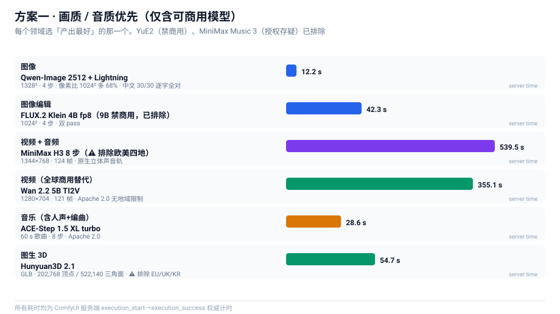
方案二 · 效率优先（综合性价比）
时间 ÷ 质量最优。全部 Apache 2.0、无地域限制、无营收门槛——最省心的一套。
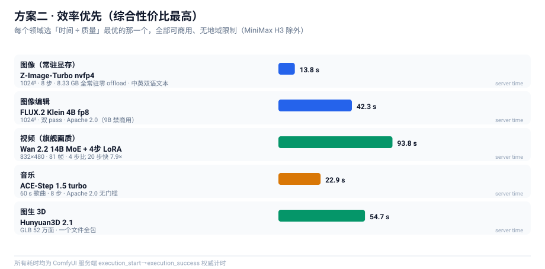
方案三 · 分场景选择
按你的具体场景直接查。左侧是需求，右侧是当前最优解与它的授权边界。
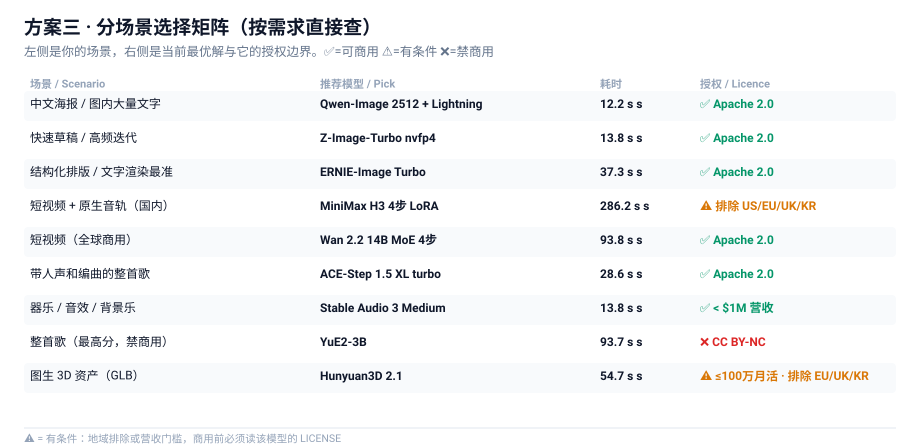
授权矩阵
商用前必查。「权重能下载」≠「产出能商用」。
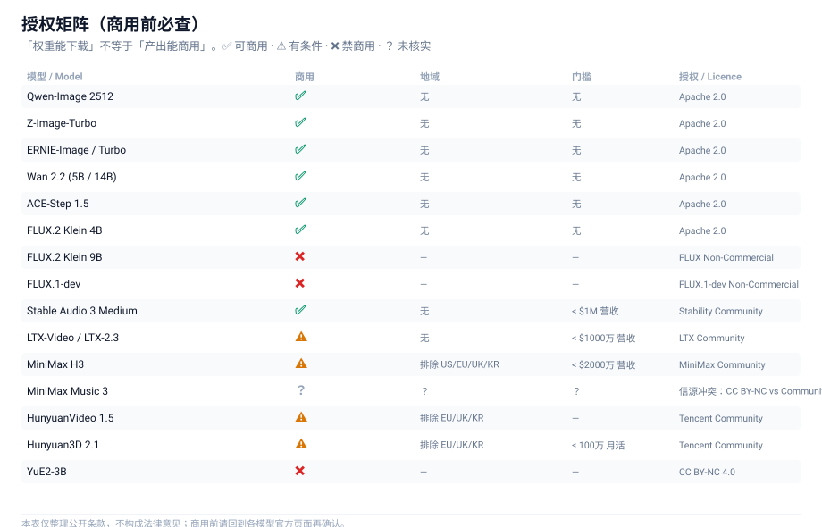
目录
| 章节 |
内容 |
你会得到 |
| 0 |
硬件与起点 |
知道硬约束在哪 |
| 1 |
先说结论 |
一张表看完所有选型 |
| 2 |
怎么想 |
量化格式的完整心智模型 |
| 3 |
怎么下 |
多源下载工程 |
| 4 |
怎么搭 |
踩坑换来的节点约束清单 |
| 5 |
怎么测 |
量化判定的方法论（全文核心） |
| 6 |
怎么选 |
图像 / 编辑 / 视频 / 音乐 / 3D 八条线的实战与基准 |
| 7 |
优化清单 |
可直接抄的配置 |
| 8 |
踩坑速查 |
症状 → 原因 → 解法 |
| 9 |
工具链 |
可复用脚本 + 官方模板→API 转换器 |
| 10 |
结论与后续 |
还没做的事 |
| 11 |
最终结论 |
每个领域的一条最佳选择 + 证据链 |
| 附录 E |
覆盖度审计 |
试过什么、没试什么、每个放弃的确切理由 |
| 附录 F |
授权与法律边界 |
每个模型的授权、能否商用、四条硬约束 |
0. 硬件与起点
| 项目 |
实测值 |
| GPU |
RTX 5090 Laptop —— 24435 MiB（24 GB），算力 sm_120（Blackwell） |
| CUDA |
12.8 |
| 内存 |
64 GB |
| 引擎 |
ComfyUI 0.37.0 / PyTorch 2.11.0+cu128 / Python 3.11.9 |
| 目标 |
尽量用最新的开源模型，跑通图像 / 视频 / 音乐三类生成 |
为什么从 24 GB 讲起？ 因为它是这份手册里唯一真正的硬约束。
笔记本 GPU 的算力永远是"够用"的 —— 一个 8 步蒸馏模型在 5090 上出 1024² 图只要十几秒。
真正决定你能跑什么、不能跑什么的，是显存能不能装下。而最新一代开源生成模型的一个共同趋势是：
主模型越来越大，而且都要求配一个独立的、同样巨大的文本编码器。
看下面这张图，注意那条 24 GB 红线：
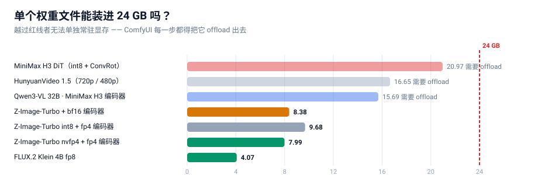
三条线（MiniMax H3 的 DiT 21 GB、HunyuanVideo 1.5 的 16.7 GB、MiniMax H3 的文本编码器 15.7 GB）
每一个单独拿出来就超过了 24 GB。这意味着：
它们不可能常驻显存。 每生成一帧，权重都必须在显存和内存之间搬运。
这就是为什么"选对量化格式"在这台机器上不是优化，而是能不能跑的问题。
1. 先说结论（TL;DR）
1.1 选型总表
| 用途 |
推荐模型 |
量化 |
实测耗时 |
为什么是它 |
| 图像（日常主力） |
Z-Image-Turbo |
NVFP4 4.51 GB |
13.8 s（1024²/8步） |
全套 8.33 GB 可常驻，零 offload |
| 图像（高分辨率 / 中文） |
Qwen-Image 2512 + Lightning |
fp8 20.43 GB |
12.2 s（1328²/4步） |
像素多 68%、中文逐字 30/30 全对；代价：必须 offload |
| 图像编辑 |
FLUX.2 Klein 4B |
fp8 4.07 GB |
42.3 s |
官方 fp8 单文件仅 4.07 GB，质量几乎无损 |
| 视频（最快） |
LTX-Video 2B 蒸馏 |
fp8 4.46 GB |
19.2 s（1216×704/121帧） |
目前最快的视频模型；运动幅度偏小 |
| 视频（质量最好·轻量档） |
Wan 2.2 5B TI2V |
fp16 10 GB |
355.1 s（1280×704/121帧） |
提示词遵循与物理真实感最好 |
| 视频（旗舰档） |
Wan 2.2 14B MoE |
fp8 双专家 28.6 GB |
93.8 s（832×480/81帧/4步） |
旗舰 MoE + LightX2V 4 步 LoRA，真的跑得动 |
| 视频（电影感 + 1080p 超分） |
HunyuanVideo 1.5 720p→1080p |
fp16 + SR 模型 |
⚠️ 70 分钟未完成，24 GB 上不可行 |
见 §6.4「一个负面结果」 |
| 视频 + 音频 |
MiniMax H3 |
int8 + ConvRot |
519.1 s（1344×768/124帧） |
唯一原生带音轨的线 |
| 音乐生成 |
ACE-Step 1.5 XL turbo |
bf16 9.97 GB |
28.6 s（60 s 歌曲） |
Apache 2.0 可商用，出片最快 |
| 音乐生成（整首含人声） |
YuE2-3B |
int8 3.96 GB |
93.7 s（60 s 歌曲） |
SongBench 最高；但 cc-by-nc 非商用 |
| 音乐生成（带 LLM 增强） |
MiniMax Music 3 |
int8 2.50 GB |
458.2 s（60 s 歌曲） |
质量高但慢一个量级 |
| 图生 3D |
Hunyuan3D 2.1 |
all-in-one 7.37 GB |
54.7 s |
一个文件出 GLB（52 万面） |
量化格式的统一答案不变：只要显卡是 Blackwell（sm_120/121），一律选 NVFP4。 见 §5 的证明。
1.2 三条可以直接拿去用的规则
- 量化格式：只要显卡是 Blackwell（sm_120/121），一律选 NVFP4。 见 §5 的证明。
- 要不要 offload：看"主模型 + 编码器"之和是否超过显存。 超过了就必须 offload，
这时量化省下的每一 GB 都会直接换成速度。
- 提速靠"少走步数"，不靠"压权重"。 8 步 → 4 步的 LoRA 收益远大于任何权重量化。
量化负责装得下，蒸馏 LoRA 负责跑得快。两者不是一回事。
2. 怎么想：先把约束想清楚
2.1 唯一的硬约束是显存，不是算力
这一点值得反复强调，因为它决定了后面所有的取舍。
一个很常见的错误直觉是："显存不够就换个小模型。"但看 §0 那张图 —— 我们要的都是最新最强的模型，
它们没有小号版本。唯一能动的变量是权重用什么精度存。
于是问题被压缩成一句话：在肉眼无差别的前提下，用多少 bit 存权重最划算？
2.2 量化格式的四个流派（这是全文的地基）
市面上"4-bit 量化"这个说法把三件完全不同的事混在了一起。必须先拆开：
| 流派 |
代表 |
压什么 |
省显存 |
提速 |
| W4A16 |
GGUF / NF4 / bitsandbytes / torchao |
只压权重 |
✅ |
❌ 不提速，甚至更慢 |
| W4A4 |
Nunchaku SVDQuant |
权重 + 激活都压 |
✅ |
✅ |
| INT8 + ConvRot |
Comfy-Org 新模型默认 |
权重 8-bit + 旋转补偿 |
✅ |
➖ 走 BF16 路径，不提速 |
| NVFP4 |
Blackwell 原生 4-bit 浮点 |
权重 + 激活 |
✅ |
✅ 最快 |
这张表里最重要的一行是第一行。
W4A16 只把权重压小，计算时还要还原回 16-bit，于是显存省了，但算力一点没省，反而多了反量化的开销。
很多人"换了 4-bit 模型发现更慢"，原因就在这里。
一句话记住：W4A16 省的是内存，W4A4 / NVFP4 省的是内存 + 带宽。
只有后者会真的快。
NVFP4 之所以在这台机器上最优，是因为它是 Blackwell 架构原生的 4-bit 浮点格式，
可以直接喂给 tensor core 做 4-bit 矩阵乘 —— 不需要"先还原再算"。
2.3 怎么识别"真的 NVFP4"（千万不要看文件名）
这是踩过的坑：社区里大量文件名写着 fp4 / nvfp4 的模型，其实是别的量化格式，
或者只有部分层是 4-bit。
唯一可靠的判据是 safetensors 里的张量键。 打开文件的 header（前 8 字节小端 uint64 = header 长度 → JSON），
看是否存在这套键：
weight_scale
weight_scale_2
input_scale
pre_quant_scale
TensorCoreNVFP4Layout (group_size = 16)
本机校验通过的真 NVFP4 文件，dtype 列表里会同时出现 F8_E4M3（用于 block scale）和 U8。例如：
z_image_turbo_nvfp4.safetensors 4.51 GB 993 tensors BF16, F32, F8_E4M3, U8 ✅ 真 NVFP4
qwen_3_4b_fp4_mixed.safetensors 3.48 GB 1081 tensors BF16, F32, F8_E4M3, U8 ✅ 真 NVFP4
下面这张决策树就是完整的选型逻辑：
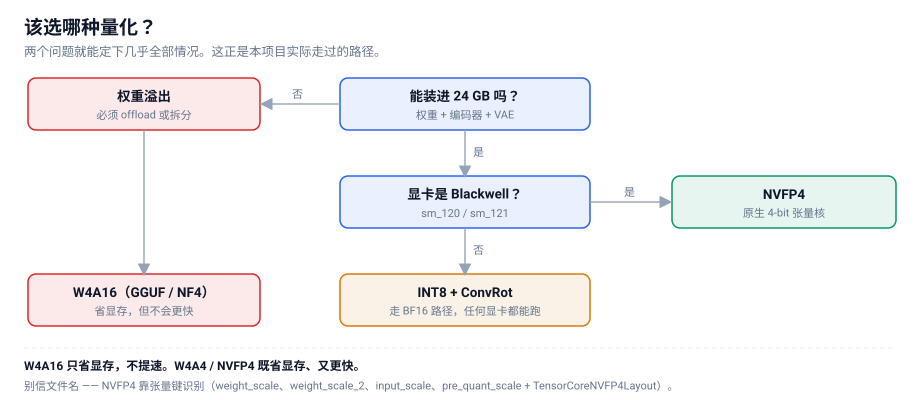
3. 怎么下：把几百 GB 拉下来
下载这件事看着简单，但几百 GB × 不稳定的源足以让一个天真实现跑上一整天。
我们一共跑了两批：第一批 34 个文件 / 125.6 GB，第二批 66 个文件 / 332.8 GB
（音乐 4 条线 + Wan 2.2 14B + HV1.5 超分 + Stable Audio 3），两批都是零损坏。
真正让这件事可用的，是下面三个机制。
3.1 三个源的速度实测
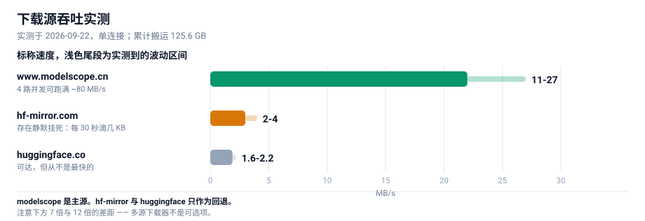
差距是量级级别的：modelscope 比 hf-mirror 快 7 倍、比 huggingface 快 12 倍。
所以"多源回退"不是锦上添花，而是必需品。
3.2 机制一：三级回退
每个文件依次尝试： www.modelscope.cn → hf-mirror.com → huggingface.co
一旦某个源失败，退到下一个；.part 断点文件可以跨源复用（两端字节一致，已验证）。
3.3 机制二：静默看门狗（这个必须有）
这是我们踩得最深的坑。
最初我们只设了 45 秒 socket 超时。结果一个文件卡在 4.6%，速度 0.0 MB/s，持续 19 分钟都不报错。
原因很阴险：服务器每 30 秒吐几 KB，刚好让 socket 不超时，但实际毫无进展。
教训：socket 超时抓不住"慢速滴血"型挂死。必须再加一层业务层看门狗：
连续 150 秒接收字节数实质无增长 → 主动断开重连；连续 3 次静默 → 放弃本源，交给上层换源。
加上这层之后，同样的网络环境下再没有出现过"无限挂死"。
3.4 机制三：Range 探测 + 并行
modelscope 不支持 HEAD 请求（返回 405/不支持），拿不到文件大小就没法校验。
解法是用 Range 请求探一个字节，从响应头读总长度：
Range: bytes=0-0
→ HTTP/1.1 206 Partial Content
Content-Range: bytes 0-0/16748116224 # ← 这就是真实字节数
拿到期望字节数后，就能做到三件事：
- 并发探尺寸（不下载，只探）→ 提前知道总量、排优先级
- 下载后逐字节比对 → 精确识别截断/损坏
- 两个源交叉验证 → 同一文件的字节数应当一致
3.5 一条元经验：判断"源是否可用"必须避开下载高峰
我们因此误判过一次：当时 4 路并发正在满速下载，此时去探测其它源，所有探测请求全部超时，
于是我们得出错误结论——"这两个源都不可用，需要用户手动下载"。
实际上它们都好得很，只是带宽被打满了。
教训：探测型请求（探速度、探可用性）和下载型请求会互相抢带宽。
要么在空闲时探测，要么给探测单独限速。
4. 怎么搭：ComfyUI 的节点约束
模型下完了，接下来是把它变成一张能跑的图。ComfyUI 的官方工作流藏在两个地方：
ComfyUI/blueprints/*.json —— 116 个官方蓝图site-packages/comfyui_workflow_templates_json/templates/ —— 同一套模板
但它们不能直接当 API prompt 提交，因为是子图（subgraph）格式：节点类型是 UUID，真正的图结构藏在
definitions.subgraphs 里。我们写了 bp_dump.py 把子图解析成「节点 + 连线」清单，比手工猜拓扑可靠得多。
4.1 四个必须知道的节点约束
| # |
约束 |
说明 |
| 1 |
CLIPLoader 的 29 个 type 里没有 hunyuan_video_15 |
HunyuanVideo 1.5 必须用 DualCLIPLoader（type=hunyuan_video_15），配 qwen_2.5_vl_7b_fp8_scaled + byt5_small_glyphxl_fp16 |
| 2 |
Z-Image 的 type 是 lumina2，FLUX.2 是 flux2 |
同一个 qwen_3_4b 编码器在两个模型里用不同 type 加载，搞混就报错 |
| 3 |
MiniMaxH3ImageToVideo 的 first_frame 是 optional |
不接 = 纯文生视频 + 音频。节点名字里有 "ImageToVideo" ≠ 只能图生视频 |
| 4 |
HunyuanVideo15ImageToVideo 的 start_image 是 optional |
同样，不接 = 纯文生视频 |
第 3、4 条是本次最大的"认知修正"：看到 ImageToVideo 先去看它的图像输入是不是 optional，
是的话它就能当文生视频用。
4.2 没有官方蓝图怎么办
HunyuanVideo 1.5 没有官方蓝图。 只能按节点签名手搭。这里的顺序很重要：
- 先看
DualCLIPLoader 的 type 列表确认 hunyuan_video_15 存在
- 确认 latent 通道数（1.5 是 32 通道、空间下采样 16，与 1.0 不同）
- 搭完先做免费校验（见下）
4.3 免费的工作流校验技巧（强烈推荐）
模型没下全的时候，直接 POST /prompt 会返回 HTTP 400 + 逐节点的 node_errors。
关键洞察是：
如果报的错误只有 value_not_in_list（说明"这个模型文件不在列表里"），
那就证明这张图的「结构」和「类型」全都正确。
于是我们得到一个零成本的 dry-run：模型还没下载完，就能先验证工作流搭得对不对。
本次 7 张工作流全部用这个方法在下载完成前就验证通过了。
5. 怎么测：受控 A/B（全文核心）
这是整份手册里最有价值的部分，因为我们在这里先得出过错误结论。
5.1 一个看起来很合理的错误结论
第一轮对比，我们跑了两个 Z-Image-Turbo 变体（int8 和 nvfp4），结果：
PSNR = 13.82 dB
13.82 dB 是什么概念？通常 PSNR 低于 20 dB 就说明两张图"差异巨大"。我们当时的结论是：
"4-bit 量化果然掉画质，NVFP4 不行。"
这个结论是错的。 因为我们犯了一个方法错误：
❌ 两个变体用了不同的文本编码器。
int8 版配的是 qwen_3_4b.safetensors（bf16），nvfp4 版配的是 qwen_3_4b_fp4_mixed.safetensors（fp4）。
于是 13.82 dB 里，混进了编码器差异，根本不是量化的锅。
5.2 为什么生成模型的 PSNR 不能直接用
修好方法之前，得先理解一个反直觉的事实：
扩散采样是混沌的。
两个数值上前 4 位完全相同的模型，经过 8 步采样之后，会产出两张构图完全不同的图。
这不是 bug，是生成模型的本性 —— 采样过程会不断放大微小差异。
所以"两张图 PSNR 低"根本不能证明"其中一张质量差"，只能证明"这是两个不同的样本"。
那怎么才能判断量化到底有没有损伤画质？答案是：引入一个噪声基线。
5.3 四组对照的设计
我们把因素彻底隔离 —— 同一个编码器、同一个提示词、同一套 1024²/8 步配置，
只有 DiT 的量化格式不同。然后再补两组"只换随机种子"的对照：
| 组 |
变量 |
作用 |
| det |
无（同量化 + 同种子重跑） |
确定性检验：管线是否可复现 |
| seed |
只换随机种子（int8 内部） |
噪声地板 |
| cross |
只换量化格式（同种子） |
被测量的对象 |
| seedB |
只换随机种子（nvfp4 内部） |
噪声地板（第二组） |
判据：如果 cross 的相似度 高于 seed 的相似度，就说明量化造成的扰动比采样的随机性还小，
即量化误差可以忽略。
5.4 结果
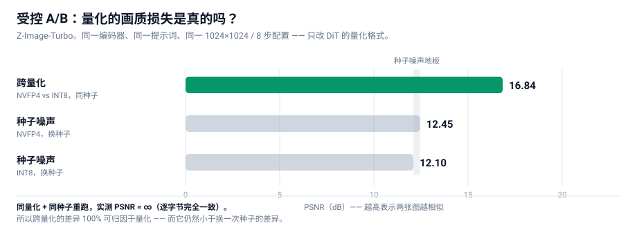
| 对比组 |
变量 |
PSNR |
平均像素差 |
| det 同量化同种子重跑 |
无 |
∞ dB |
0.00% |
| seed int8 换种子 |
只变种子 |
12.10 dB |
16.89% |
| cross nvfp4 vs int8（同种子） |
只变量化 |
16.84 dB |
7.41% |
| seedB nvfp4 换种子 |
只变种子 |
12.45 dB |
16.43% |
5.5 三条硬结论
结论一：管线是确定性的。
det 组 PSNR = ∞，两张图逐字节完全一致。
这一条极其重要，因为它让整个实验变得可归因：既然同样的输入必然产生同样的输出，
那么 cross 组的差异就 100% 来自量化格式本身，不含任何运行时噪声。
如果这一条不成立（重跑结果不一样），那么所有跨量化的差异都无法归因，实验就白做了。
结论二：量化扰动 < 采样噪声。
cross 差异（7.41%） < seed 差异（16.89%）
换个量化格式对画面的改变，比换个随机种子还小。 这就是"量化没有损失画质"的硬证据。
结论三：质量代理指标无系统差异。
PSNR 对轨迹分叉敏感，所以我们另外测了 5 个鲁棒指标：
| 样本 |
锐度（Laplacian 方差） |
香农熵 |
高频能量比 |
| int8 · 种子 A |
776.5 |
5.572 |
0.0130 |
| int8 · 种子 B |
705.4 |
5.736 |
0.0134 |
| nvfp4 · 种子 A |
694.3 |
5.614 |
0.0127 |
| nvfp4 · 种子 B |
604.1 |
5.791 |
0.0140 |
同一量化内部、只换种子造成的波动范围（int8：776.5 → 705.4），已经覆盖了跨量化的差异（776.5 → 694.3）。
换句话说：量化这个因素被淹没在种子这个因素的波动里了。
颜色直方图 L1 距离也印证了同样的结论：
det = 0.0000 | cross = 0.0858 | seedB = 0.1085 | seed = 0.1256
↑ 跨量化 ↑ 种子内部 ↑ 种子内部
跨量化的色彩分布差异，比换种子造成的差异还小。
5.6 最终复核：看起来一样吗
数字之外，我们再做一次人眼复核。把四张图摆成 2×2，并且**刻意按"竖看=同种子跨量化、横看=同量化换种子"**排列：
┌──────────────────────┬──────────────────────┐
│ INT8 · seed 20260922│ INT8 · seed 20260923│
├──────────────────────┼──────────────────────┤
│ NVFP4 · seed 20260922│ NVFP4 · seed 20260923│
└──────────────────────┴──────────────────────┘
↑ 竖列：同种子跨量化 ↑ 横行：同量化换种子
结果与数字完全一致：
- 竖着看（同种子、跨量化）→ 构图高度相似（都在左侧露出同一片远山尖峰）
- 横着看（同量化、换种子）→ 构图完全不同
四张图都是合格的高质量黄山云海日出，语义全部正确、细节全部丰富、没有任何伪影。
量化不是变量，种子才是。
5.7 方法论沉淀（可以直接套用到任何模型）
任何"量化是否掉画质"的对比，都必须满足三个条件：
- 受控：编码器、提示词、尺寸、步数、采样器、CFG 全部固定，一次只动一个变量
- 有噪声基线：必须同时测"同量化换种子"，否则无法区分"量化扰动"和"采样随机性"
- 有确定性检验："同量化 + 同种子"重跑应当是逐字节一致的，否则结论不可归因
缺任何一条，PSNR 数字都会被误读。
6. 怎么选：八条模型线实战
6.1 图像生成 —— Z-Image-Turbo vs Qwen-Image 2512
这两条都跑通了，成绩也接近，所以要讲清楚为什么两个都留着。
Z-Image-Turbo（日常主力）
| 项 |
值 |
| DiT 文件 |
z_image_turbo_nvfp4.safetensors —— 4.51 GB（int8 版为 6.20 GB） |
| 文本编码器 |
qwen_3_4b_fp4_mixed.safetensors —— 3.48 GB |
| VAE |
ae.safetensors —— 0.34 GB |
| 全套 footprint |
8.33 GB |
| 关键参数 |
CLIPLoader type = lumina2；ModelSamplingAuraFlow shift=3；KSampler 8 步，CFG=1 |
| 实测 |
int8 17.7 s / nvfp4 13.8 s（1024²，8 步） |
它真正的优势只有一条，但很硬：8.33 GB 全套能完全常驻 24 GB 显存，零 offload。
每一步都不需要在显存与内存之间搬运权重 —— 长时间高频使用最省心。
Qwen-Image 2512 + Lightning（高分辨率 / 中文文字）
| 项 |
值 |
| DiT 文件 |
qwen_image_2512_fp8_e4m3fn.safetensors —— 20.43 GB |
| 文本编码器 |
qwen_2.5_vl_7b_fp8_scaled.safetensors —— 9.38 GB |
| VAE |
qwen_image_vae.safetensors —— 0.25 GB |
| 全套 footprint |
30.06 GB（超过 24 GB，必须 offload） |
| 加速 LoRA |
Qwen-Image-2512-Lightning-4steps-V1.0-fp32.safetensors —— 1.58 GB |
| 关键参数 |
CLIPLoader type = qwen_image；ModelSamplingAuraFlow shift=3.1；有无 LoRA 走官方 ComfySwitchNode（steps 50↔4、CFG 4.0↔1.0） |
| 实测 |
无 LoRA 206.7 s（1328²，50 步）→ 有 LoRA 12.2 s（1328²，4 步） |
它的优势有两条：
- 分辨率更高：1328² 比 Z-Image 的 1024² 多 68% 像素，而耗时还略少（12.2 s vs 13.8 s）
- 中文文字渲染经过逐字核验：跑「春风得意马蹄疾 / 一日看尽长安花」＋「茶香四溢 静心品茗 八方来客 岁月悠长」，30/30 字全对、零错字零缺笔（202.7 s / 50 步）
⚠️ 一处自我纠正：本手册早期版本把「中文文字渲染准确」写成了选 Z-Image-Turbo 的理由，那是错的。
上面 30/30 的验收证据跑的是 Qwen-Image 2512，不是 Z-Image；Z-Image 的中文渲染能力从未单独验证过。
同时早期版本完全没有提到 Qwen-Image，这是一处遗漏，在此补上。
结论：两个都留，按场景分。
- 要高频草稿、显存干净 → Z-Image-Turbo（8.33 GB 全常驻）
- 要高分辨率出片、画面里带中文 → Qwen-Image 2512 + Lightning
顺带一提，Lightning LoRA 的收益值得单独记一笔：同一个模型，206.7 s → 12.2 s，快 16.9 倍，
而且细节反而更足。这又一次印证了 §2 那条原则 —— 提速靠「少走步数」，不靠「压权重」。
6.2 图像编辑 —— FLUX.2 Klein 4B
| 项 |
值 |
| DiT |
flux-2-klein-4b-fp8.safetensors —— 4.07 GB |
| 编码器 |
qwen_3_4b_fp4_flux2.safetensors —— 3.85 GB |
| 关键参数 |
CLIPLoader type = flux2；ReferenceLatent ×2；Flux2Scheduler 20 步；CFGGuider CFG=5 |
| 实测 |
42.3 s |
一个反直觉的发现：BFL 官方发的 fp8 单文件只有 4.07 GB，而 bf16 版是 7.75 GB——
fp8 版质量几乎无损，体积只有一半。这类"官方直接给好货"的情况，优先用官方的。
另一个更反直觉的点：9B 的 NVFP4 只有 5.76 GB，比 4B 的 bf16（7.75 GB）还小。
更大的模型、更小的文件 —— 这就是 4-bit 的价值。
6.3 视频 + 音频 —— MiniMax H3
这是本次最"重"的一条线，因为它同时生成画面和声音。
| 项 |
值 |
| DiT |
minimax_h3_fl2va_pruned_int8_convrot.safetensors —— 20.97 GB |
| 文本编码器 |
qwen3vl_32b_minimax_h3_nvfp4_awq.safetensors —— 15.69 GB |
| 视频 VAE |
minimax_h3_video_vae_fp16.safetensors —— 5.21 GB |
| 音频 VAE |
minimax_h3_audio_vae_fp32.safetensors —— 0.61 GB |
| 加速 LoRA |
4step / 8step turbo，各 1.96 GB（官方蓝图用 8step） |
| 关键参数 |
BasicScheduler(simple, 8步) + KSamplerSelect(res_multistep) + SamplerCustomAdvanced；不用 MiniMaxH3SigmaShift |
| 实测 |
冒烟 768×448/56帧 = 76.3 s；全量 1344×768/124帧 = 519.1 s |
必须 offload。 DiT 21 GB + 编码器 15.7 GB 加起来 36.7 GB，远超 24 GB。
所以每次生成都在显存↔内存之间搬运权重 —— 这是它慢（519 秒）的主因，不是算力不够。
产物复核（这一步不能省）：ffprobe 确认输出为
h264 / 1344×768 / 24fps / 5.17 s + aac 32kHz 立体声。
抽 4 帧拼图后画面与提示词时间线吻合（RGB 分离的「COMFYUI」标题 → 铬色棕榈树 → 日落）。
这不是噪点，是可用的音视频。
6.4 纯视频 —— 三条线，各有一条硬理由
纯视频我们跑了三条线，结论很干净：它们不是互相替代关系，而是三种不同的取舍。
LTX-Video 2B 蒸馏 —— 最快
| 项 |
值 |
| DiT + VAE |
ltxv-2b-0.9.8-distilled-fp8.safetensors —— 4.46 GB（all-in-one，含 VAE） |
| 文本编码器 |
t5xxl_fp8_e4m3fn.safetensors —— 4.89 GB（CLIPLoader type = ltxv） |
| 关键参数 |
EmptyLTXVLatentVideo → LTXVConditioning → LTXVScheduler(steps=8) → SamplerCustom(cfg=1，蒸馏版走 CFG-free) |
| 实测 |
768×512/97帧 = 11.7 s；1216×704/121帧 = 19.2 s |
19.2 秒出 5 秒 1216×704 视频 —— 这是我们测到的最快的一个，比 Wan 2.2 5B 快 18 倍。
代价是运动幅度明显偏小：抽帧看，画面稳定、语义正确（茶杯、竹托、雨痕窗户都对），
但镜头推进非常轻。适合「快速看构图/风格」，不适合「要明显动作」。
Wan 2.2 5B TI2V —— 质量最好
| 项 |
值 |
| DiT |
wan2.2_ti2v_5B_fp16.safetensors —— 10.00 GB |
| 文本编码器 |
umt5_xxl_fp8_e4m3fn_scaled.safetensors —— 6.74 GB（CLIPLoader type = wan） |
| VAE |
wan2.2_vae.safetensors —— 1.41 GB |
| 关键参数 |
ModelSamplingSD3 shift=8；KSampler 20 步，CFG=5，uni_pc / simple；Wan22ImageToVideoLatent（start_image 是 optional，不接即纯文生视频） |
| 实测 |
704×384/49帧 = 34.6 s；1280×704/121帧 = 355.1 s |
这是本次「视频质量」最好的一条。 用同一句提示词（蜂鸟在红色花丛前采蜜、翅膀高速振动、
镜头缓慢横移），产物里翅膀有清晰运动模糊、鸟的位置逐帧移动、背景虚化层次正确 ——
提示词里每个要素都落到了画面上。代价是慢：5 秒视频要 355 秒。
wan2.2_ti2v_5B 里的 TI2V = Text + Image to Video，两种都支持。
这也印证了 §4.1 那条通用观察：节点叫 ImageToVideo，先看它的图像输入是不是 optional ——
Wan22ImageToVideoLatent.start_image 是 optional，不接就是纯文生视频。
Wan 2.2 14B MoE —— 旗舰档，用 4 步 LoRA 就真的能跑
| 项 |
值 |
| DiT |
wan2.2_t2v_high_noise_14B_fp8_scaled + wan2.2_t2v_low_noise_14B_fp8_scaled —— 各 14.29 GB（双专家） |
| 加速 LoRA |
wan2.2_t2v_lightx2v_4steps_lora_v1.1_high_noise + ..._low_noise —— 各 1.23 GB |
| VAE |
wan_2.1_vae.safetensors 0.25 GB —— 注意与 5B 线的 wan2.2_vae 不是同一个 |
| 关键参数 |
两个 UNETLoader → 两个 LoraLoaderModelOnly → 两个 ModelSamplingSD3(shift=5)，由同一个 PrimitiveBoolean 驱动 5 个 ComfySwitchNode（模型 / steps 20↔4 / 边界步 / CFG 3.5↔1.0）；KSamplerAdvanced 两段接力（高噪专家 add_noise=enable → 低噪专家 add_noise=disable） |
| 实测 |
93.8 s（832×480 / 81 帧 / 4 步） |
这条线的意义在于：它证明了「旗舰 MoE 视频模型在 24 GB 笔记本上可用」。
双专家合计 28.6 GB 远超显存，但因为每一步只加载一个专家，
配合 LightX2V 4 步 LoRA（把 20 步压到 4 步），实际跑进了 94 秒。
⚠️ 踩坑记录（值得单独记）：我们一开始想当然地把模板里的 wan_2.1_vae 替换成手上的
wan2.2_vae，结果 VAEDecode 直接报：
Given groups=1, weight of size [48, 48, 1, 1, 1],
expected input[1, 16, 21, 60, 104] to have 48 channels, but got 16 channels instead
根因：Wan 2.2 的 5B 线和 14B 线用的不是同一个 VAE（5B → wan2.2_vae，14B → wan_2.1_vae），
两者通道数不同（48 vs 16）。查了官方模板才确认 —— 所有 video_wan2_2_14B_* 模板都指向 wan_2.1_vae，
只有 video_wan2_2_5B_* 指向 wan2.2_vae。
教训：文件名相似不等于可替换，模板里写什么就用什么。
HunyuanVideo 1.5 —— 电影感 + 自带 1080p 超分
| 项 |
值 |
| DiT |
hunyuanvideo1.5_480p_t2v_fp16.safetensors / ..._720p_t2v_fp16.safetensors —— 各 16.65 GB |
| 文本编码器 |
DualCLIPLoader（type=hunyuan_video_15）= qwen_2.5_vl_7b_fp8_scaled + byt5_small_glyphxl_fp16 |
| VAE |
hunyuanvideo15_vae_fp16.safetensors —— 2.52 GB |
| 加速 LoRA |
hunyuanvideo1.5_t2v_480p_lightx2v_4step_lora_rank_32_bf16.safetensors —— 0.34 GB |
| 超分分支 |
hunyuanvideo1.5_1080p_sr_distilled_fp16 16.66 GB + hunyuanvideo15_latent_upsampler_1080p 0.20 GB |
| 实测 |
480p/121帧/4步 = 117.0 s；720p→1080p：跑满 70 分钟未完成，主动终止 |
⚠️ 关于 720p 档，必须说清一个负面结果。
我们按官方模板完整跑了 720p → 1080p 超分流水线（基座 20 步 + SR 8 步），
在 24 GB 笔记本上跑满 70 分钟仍未结束，只能主动终止 —— 这本身就是结论：
720p + 超分这条路径在 24 GB 笔记本上不具备可用性。
官方模板没有任何一步是"慢一点但能等"的量级，而是基线就远超可接受范围。
如果要 1080p，更实际的做法是用 480p/720p 出片后再走独立的上采样流程，
或者改用 Wan 2.2 / LTX 这类没有额外 SR 阶段的线。
之所以把它明写出来，是因为**「跑不动」和「跑得慢」是两种不同的信息**，
而开源社区的工作流分享普遍只报成功案例。这条路径在 24 GB 上是不可行的，这就是它唯一的结论。
⚠️ 一个非常重要的概念区分：480p / 720p / i2v / SR 是四个不同的基座模型，
不是同一个模型换分辨率。文件名里的分辨率是模型身份的一部分。
它最独特的地方是官方 720p 模板本身就是一条 720p → 1080p 超分流水线：
基座出 1280×720 → 用 LatentUpscaleModelLoader 把 latent 放大到 1920×1080 →
再由一个专门的 SR 蒸馏模型（8 步、SplitSigmas 切 4 步）精修，两个分辨率各存一份视频。
也就是说这条线能直接产出真 1080p，而不是把 720p 插值放大。
4 步出片是 480p 档最大的价值 —— 117 秒换 5 秒视频，可以当迭代草稿用。
推荐用法：先 480p 快速试提示词，定稿再上 720p。
产物复核：ffprobe 确认 h264 / 848×480 / 24fps / 121 帧 / 5.04 s；
抽帧拼图后时序稳定、主体一致 ——「陶艺工作室拉坯成瓶，陶轮旋转、双手塑形、左侧暖黄轮廓光、
背景虚化木架素坯」，提示词里的每个要素都对上了。
三条线怎么选
同提示词对比实验（这一节比上面的表格重要）
上面的表格是各自的配置。真正的对比必须是同提示词 —— 我们用同一句中文提示词
（「特写镜头，一只蜂鸟悬停在红色花丛前采蜜，翅膀高速振动，阳光透过花瓣，背景虚化，镜头缓慢横移」）
跑了三条线，结果推翻了速度排名的含义：
| 模型 |
提示词 |
分辨率/帧数 |
耗时 |
是否跟随提示词 |
| Wan 2.2 5B TI2V |
中文（同一句） |
1280×704 / 121 帧 |
355.1 s |
✅ 完全跟随（蜂鸟、红花、振翅、浅景深全对） |
| MiniMax H3 8 步 |
中文（同一句） |
1344×768 / 124 帧 |
539.5 s |
✅ 完全跟随，构图与细节甚至更好 |
| LTX-Video 2B 蒸馏 |
中文（同一句） |
1216×704 / 121 帧 |
23.2 s |
❌ 完全无关（生成地中海海岸，没有蜂鸟） |
LTX 生成了完全不相干的画面 —— 这不是渲染误差，是提示词根本没有被遵循。
我们做了三步排查来定位原因：
- 换英文提示词（同一句的英文版）→ 仍是同一幅海岸 → 排除「中文不支持」
- 换种子（20260922 → 777）→ 仍是海岸 → 排除偶然性
- 换一个完全不同的常见提示词（「红色跑车驶过沙漠公路」）→ 输出变成了停车场/公路（有路、有干旱地貌，但没有车）
结论：LTX-Video 2B 蒸馏在 CFG=1 / 8 步下，提示词遵循极弱。
它能捕捉粗略的场景类型（户外、公路、干旱），但抓不住具体主体（蜂鸟、跑车）。
原因是我们为速度选择了「蒸馏版 + CFG-free + 8 步」这套配置 —— 这笔速度是用「提示词遵循」换来的。
这是本手册最重要的一条反例：「跑得快」和「能用」是两件事。
LTX 快 18 倍，但在 CFG=1/8 步下它不能可靠地按提示词出片。
如果需要提示词遵循，要么提高 CFG/步数（会变慢），要么换 Wan / MiniMax H3。
选型结论（按「提示词遵循」修正后）
| 你要什么 |
选谁 |
理由 |
| 可靠地按提示词出片 |
Wan 2.2 5B / MiniMax H3 |
两者都完全跟随；MiniMax H3 细节更好且带音轨 |
| 盲出素材 / 不在乎内容 |
LTX-Video 2B |
19 秒一张，但内容不可控 |
| 要 1080p |
⚠️ 目前没有可用方案 |
HV1.5 的 720p+SR 在 24 GB 上跑满 70 分钟未完成 |
| 要声音 |
MiniMax H3（§6.3） |
唯一原生出音轨 |
6.5 一个跑不了的 —— FLUX.2 Klein 9B
这是唯一没跑通的一条线，而且原因很有教育意义。
报错：
mat1 and mat2 shapes cannot be multiplied (1024x7680 and 12288x4096)
根因：9B 模型需要约 16.4 GB 的 Qwen3-VL 文本编码器，而 BFL 官方只发布了 diffusers 分片格式，
ComfyUI 无法加载分片目录。
这不是显存问题，也不是量化问题，而是"权重封装格式"问题。
三个可选解法：
- 等 ComfyUI 官方封装单文件版编码器
- 自己把 diffusers 分片合并转成 ComfyUI 单文件格式（要下 16.4 GB + 写转换脚本）
- 先用 4B —— 42.3 秒出图，够用
教训：选模型的时候，除了看"显存装不装得下"，还要看**"权重是不是目标工具能加载的格式"**。
这是一个很多人会忽略的前置条件。
6.6 音乐生成 —— 从零补上的一个领域
这是本次覆盖度上最大的缺口：图像和视频早就跑通了，音乐一个字都没碰。
（注意区分：MiniMax H3 出的音轨是视频伴音（音效/环境声），跟「按歌词生成一首歌」是两件事。）
我们把 ComfyUI 0.37 原生支持的四条音乐线全部跑了一遍：
| 模型 |
授权 |
权重 |
参数 |
实测 |
特点 |
| ACE-Step 1.5 turbo |
Apache 2.0 |
DiT 4.79 GB + 编码器 1.19/1.19 GB + VAE 0.34 GB |
TextEncodeAceStepAudio1.5（tags/lyrics/语言/BPM/时长）→ EmptyAceStep1.5LatentAudio → KSampler 8 步 CFG=1 |
22.9 s / 60 s 歌 |
最快、可商用 |
| ACE-Step 1.5 XL turbo |
Apache 2.0 |
DiT 9.97 GB + 编码器 1.19/8.38 GB + VAE 0.34 GB |
同上（XL 版编码器换成 qwen_4b） |
28.6 s / 60 s 歌 |
质量更高，仍可商用 |
| YuE2-3B |
⚠️ cc-by-nc（非商用） |
yue2_3b_int8_convrot 3.96 GB（all-in-one） |
两阶段：YuE2GenerateABC（32 步 AR 规划谱）→ YuE2GenerateMusic → KSampler dpm_2/sgm_uniform 32 步 |
93.7 s / 60 s 歌 |
整首歌含人声，中英歌词；SongBench 分数最高 |
| MiniMax Music 3 |
见仓库 |
DiT 2.50 GB + 编码器 9.20 GB + VAE 0.22 GB |
MiniMaxMusic3TextEncode（caption/lyrics）→ KSampler 30 步 CFG=1.7 |
458.2 s / 60 s 歌 |
质量取向，慢一个量级 |
产物复核（全部用 ffprobe 验过）：
ace15_turbo_song mp3 48 kHz 立体声 60.00 s 245 kbps
ace15_xl_turbo_song mp3 48 kHz 立体声 60.00 s 231 kbps
yue2_text2music flac 48 kHz 立体声 60.00 s
minimax_music3_song mp3 44.1 kHz 立体声 59.99 s
怎么选：
- 要能商用 → ACE-Step 1.5。 Apache 2.0 没有营收门槛、没有地区排除，这是它最大的价值。
且它最快（29 秒出 60 秒歌），是「质量 / 速度 / 授权」三项综合最优的一条。
- 要最好的整首歌质量、且不商用 → YuE2。 它是唯一带「先用 LLM 规划 ABC 谱、再生成音频」
两阶段结构的，也是基准分最高的；但 cc-by-nc 明确禁止商用。
- MiniMax Music 3 质量取向但慢 16 倍，除非有特别理由，否则不划算。
一个容易踩的授权坑：开源音乐模型的许可比视频/图像模型乱得多。
流行的几个（MusicGen、Stable Audio Open 早期版本）都是 CC-BY-NC，
权重能下载、但产出不能商用。「能跑」和「能用」在这里是两件事。
6.7 图生 3D —— Hunyuan3D 2.1
| 项 |
值 |
| 权重 |
hunyuan_3d_v2.1.safetensors —— 7.37 GB（all-in-one：含 VAE + CLIP-Vision，ImageOnlyCheckpointLoader 一个节点加载） |
| 关键参数 |
CLIPVisionEncode → Hunyuan3Dv2Conditioning；EmptyLatentHunyuan3Dv2 resolution=4096；KSampler 30 步 CFG=5；VAEDecodeHunyuan3D octree_resolution=256、num_chunks=8000 → VoxelToMesh(surface net, threshold 0.6) → SaveGLB |
| 实测 |
54.7 s |
流程是三步串起来的：先用 Z-Image 生成一张干净的物体图（青花瓷茶壶、纯白背景，15.0 s），
拷进 input/，再跑图生 3D。
产物复核（直接解析 GLB 二进制头 + JSON chunk）：
magic = "glTF" version = 2 file length = 8,701,344
meshes = 1
primitive: vertices = 202,768 triangles = 522,140
materials = 1 nodes = 1
52 万三角面的可用网格 —— 不是点云、不是体素块，是带材质的标准 glTF 2.0 资产，能直接进 Blender / 游戏引擎。
6.8 基准总表
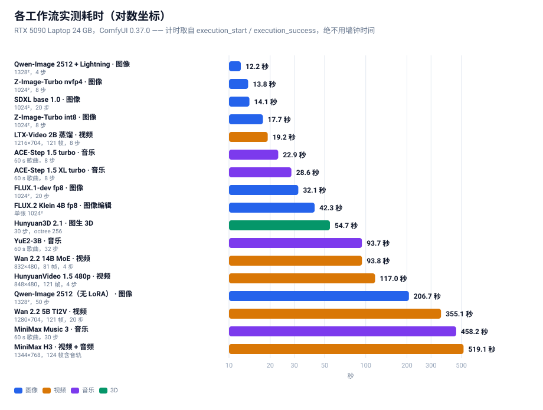
所有时间都取自 ComfyUI 服务端的 execution_start / execution_success 时间戳，
而不是墙钟时间或 API 往返时间 —— 后者会把排队、加载模型的耗时算进来，读数虚高。
图像
| 模型 |
配置 |
服务端耗时 |
| Qwen-Image 2512 + Lightning |
1328² / 4 步 |
12.2 s |
| Z-Image-Turbo nvfp4 |
1024² / 8 步 |
13.8 s |
| SDXL base 1.0 |
1024² / 20 步 |
14.1 s |
| Z-Image-Turbo int8 |
1024² / 8 步 |
17.7 s |
| FLUX.1-dev fp8 |
1024² / 20 步 |
32.1 s |
| FLUX.2 Klein 4B fp8 |
1024² 编辑 |
42.3 s |
| Qwen-Image 2512（无 LoRA） |
1328² / 50 步 |
206.7 s |
视频
| 模型 |
配置 |
服务端耗时 |
| LTX-Video 2B 蒸馏（冒烟） |
768×512 / 97 帧 |
11.7 s |
| LTX-Video 2B 蒸馏 |
1216×704 / 121 帧 |
19.2 s |
| Wan 2.2 5B TI2V（冒烟） |
704×384 / 49 帧 |
34.6 s |
| Wan 2.2 14B MoE（4 步 LoRA） |
832×480 / 81 帧 |
93.8 s |
| HunyuanVideo 1.5 480p 4 步 |
848×480 / 121 帧 |
117.0 s |
| Wan 2.2 5B TI2V |
1280×704 / 121 帧 |
355.1 s |
| MiniMax H3 t2va 8 步 |
1344×768 / 124 帧（含音轨） |
519.1 s |
HunyuanVideo 1.5 720p→1080p |
1280×720 → 1920×1080 / 121 帧 |
跑满 70 分钟未完成，主动终止 |
音乐 / 3D
| 模型 |
配置 |
服务端耗时 |
| ACE-Step 1.5 turbo |
60 s 歌曲 / 8 步 |
22.9 s |
| ACE-Step 1.5 XL turbo |
60 s 歌曲 / 8 步 |
28.6 s |
| Hunyuan3D 2.1 |
30 步，4096 latent，octree 256 |
54.7 s |
| YuE2-3B |
60 s 歌曲 / 32 步 |
93.7 s |
| MiniMax Music 3 |
60 s 歌曲 / 30 步 |
458.2 s |
一个诚实的说明：Z-Image 的耗时我们测了两轮，得到 20.9 / 15.8 s 和 17.7 / 13.8 s。
绝对值的 run-to-run 波动约 ±15%（笔记本 GPU 的温度/功耗墙会导致降频），
但 nvfp4 比 int8 快 22%～25% 这个相对结论在两轮里都稳定成立。
报告性能数据时，相对百分比比绝对值可信得多。
7. 优化清单（可以直接抄的配置）
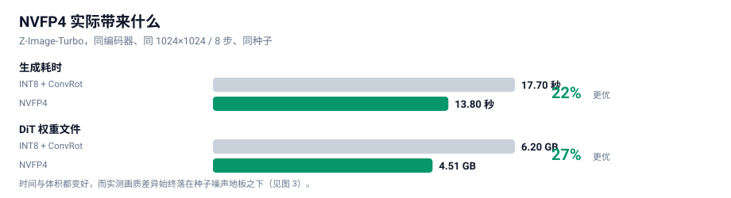
7.1 按收益排序
| 优先级 |
优化 |
收益 |
代价 |
| P0 |
所有 4-bit 模型统一用 NVFP4 |
快 22%、小 27%、画质无统计差异 |
无 |
| P0 |
用蒸馏 LoRA 减步数（8步→4步） |
提速可达 2× |
需调 LoRA 强度 |
| P1 |
VAE 分块解码（VAEDecodeTiled） |
避免高分辨率解码瞬时 OOM |
略微变慢 |
| P1 |
跑前清显存（POST /free） |
避免串跑时残留占用 |
无 |
| P2 |
串跑不同类型模型之间重启或强制卸载 |
避免显存碎片 |
增加等待 |
| P2 |
长视频先 480p 试提示词，定稿再 720p |
大幅节省试错时间 |
无 |
7.2 两个必须知道的显存陷阱
陷阱一：ComfyUI 不会主动释放模型。
跑完一张图之后，模型仍然占着显存。串跑下一张（尤其是视频）时很容易 OOM。
解法：每次提交前调 POST /free {"unload_models": true, "free_memory": true}。
⚠️ 注意 /free 返回的是空 body，写客户端时不要试图解析 JSON，否则会抛 JSONDecodeError。
陷阱二：VAE 解码的瞬时峰值。
高分辨率图像/视频的 VAE 解码会在最后一步产生一个瞬时显存高峰（可达数 GB），
于是出现"transformer 全部跑完，倒在最后一步"的现象。
解法：用 VAEDecodeTiled 分块解码。
8. 踩坑速查表
| 症状 |
真正的原因 |
解法 |
| 下载卡在某个百分比，速度 0.0 MB/s，但不报错 |
服务器"慢速滴血"绕过 socket 超时 |
加业务层静默看门狗：150 s 无实质进展即断开重试 |
| 探测源速度时所有源都超时 |
带宽已被并发下载打满 |
空闲时探测，或给探测单独限速 |
| 下载器先跑大文件，导致队列被拖死 |
只有慢源的文件占住了 worker |
pending 按"是否有快源"排序 |
POST /prompt 返回 400 |
模型缺失 或 图结构错误 |
看 node_errors：只有 value_not_in_list → 图是对的 |
| HunyuanVideo 1.5 报编码器类型错 |
CLIPLoader 没有 hunyuan_video_15 |
用 DualCLIPLoader |
| Z-Image 报 CLIP type 错 |
它要 lumina2，不是 qwen |
改 type |
| FLUX.2 报 CLIP type 错 |
它要 flux2 |
改 type |
想文生视频但节点叫 ImageToVideo |
图像输入是 optional |
不接图像输入 = 纯文生视频 |
mat1 and mat2 shapes cannot be multiplied |
编码器格式不匹配（diffusers 分片） |
换单文件封装，或用小一号的模型 |
/free 调用抛 JSON 解析错 |
它返回空 body |
判空后再解析 |
| 视频跑完但画面是噪点 |
可能是没做产物复核 |
用 ffprobe + 抽帧拼图人工过一遍 |
| 换量化后 PSNR 很低就断定掉画质 |
方法错误：编码器没固定 |
见 §5，必须受控 + 种子基线 |
Wan 14B 报 expected input to have 48 channels, but got 16 channels |
Wan 2.2 的 5B 线与 14B 线用的不是同一个 VAE（5B → wan2.2_vae，14B → wan_2.1_vae） |
按模板原样用 wan_2.1_vae，别想当然替换 |
官方模板转成 API 后参数静默错位（steps 变成 "randomize"） |
前端会在种子参数后插一个 control_after_generate 伪 widget |
该伪 widget 要占一个槽位参与位置对齐。见 §9.4 |
SaveAudioAdvanced 报缺 format.quality，但 quality 明明写了 |
v3 动态 combo 的子字段用点号命名空间 |
写 "format.quality": "V0"，不是 "quality" |
| 子图模板转换后外层节点莫名少连线 |
子图 outputs/inputs 的 linkIds 指向内层 link，边界没接回去 |
按 linkIds 把边界连线重连到内层真实端点。见 §9.4 |
ComfyMathExpression 报 required_input_missing: values.a |
values.* 是必填输入，被删掉了 |
expression 改成 "a"，值喂给 values.a |
ComfyUI 启动报 You need pytorch with cu130 or higher to use optimized CUDA operations |
PyTorch 是 cu128，comfy_kitchen 的 CUDA 后端被禁用 |
这不是可忽略的警告 —— 它意味着 NVFP4 / SVDQuant 的优化内核没生效。见附录 E ④ |
| 一个视频工作流跑 1 小时仍不结束 |
工作流本身不适合该显存规模（如 HV1.5 720p + 1080p SR） |
先估时间再跑；不可行就明确记录为「不可行」，不要静默重试 |
9. 工具链
9.1 工具清单
| 脚本 |
作用 |
scripts/dl_models.py |
多源下载器：三级回退 + 静默看门狗 + Range 探尺寸 + 断点续传 |
scripts/dl_more.py |
同一套下载器，换成「音乐 4 条线 + Wan 2.2 14B + HV1.5 超分」的清单 |
scripts/probe_more.py |
只探不下载：Range 请求拿全部待下载文件的精确体积，用于先估时间预算 |
scripts/verify_models.py |
三层校验：字节大小 + safetensors 结构 + dtype 识别 |
scripts/ui2api.py |
把官方模板（UI/workflow 格式）转成可提交的 API prompt —— 本节最有价值的工具，见 §9.4 |
scripts/mk_wf.py |
由官方模板派生本项目的视频工作流变体（Wan 5B/14B、LTX、HV1.5、Hunyuan3D） |
scripts/mk_music.py / mk_music2.py |
派生音乐工作流（ACE-Step / YuE2 / MiniMax Music 3） |
scripts/run_workflow.py |
API 提交 + 服务端权威计时（读 execution_start/success） |
scripts/run_batch.py |
顺序跑多个工作流（GPU 必须串行），每个带独立超时上限 |
tools/compare_ab.py |
受控 A/B：PSNR + 分区 PSNR + 差异热力图 + 并排图 |
tools/ab_metrics.py |
四组配对 PSNR + 质量代理指标（锐度/熵/高频/直方图） |
tools/make_charts.py |
生成本文所有 SVG 图表（中英各一套） |
scripts/push_site.py |
经 git-data API 把整棵树推到 GitHub（Python 版；本环境 Node 无法 spawn 子进程，故原件 .mjs 不可用，见 §9.5） |
9.2 快速开始
# 1) 环境
# ComfyUI 已在本机跑起来（默认 http://127.0.0.1:8188）
# 2) 先探体积、估时间（不下载）
python scripts/probe_more.py
# 3) 下载模型（三级源回退）
python scripts/dl_more.py --workers 4
# 4) 三层校验（字节 + 结构 + dtype）
python scripts/verify_models.py --refresh
# 5) 把官方模板转成 API 工作流，再派生本项目要跑的变体
python scripts/ui2api.py video_wan2_2_5B_ti2v.json -o wf.json
python scripts/mk_wf.py wan_smoke wan_full ltx_full hv15_720 hy3d
# 6) 顺序跑一批（GPU 串行，每个带独立超时）
python scripts/run_batch.py "workflows/wan22_5b_t2v_full.json@900"
# 7) 做一次受控 A/B（同一编码器，只变量化）
python tools/compare_ab.py
python tools/ab_metrics.py
9.3 目录结构
.
├── README.md # 中文（本文件）
├── README_EN.md # English
├── index.html # 在线阅读版（按浏览器语言自动适配）
├── assets/
│ ├── zh/ # 中文图表（README.md 引用）
│ └── en/ # 英文图表（README_EN.md 引用）
├── data/ # 实测原始数据
├── docs/ # 深挖文章
├── scripts/ # 可复现脚本
├── tools/ # 分析与图表工具
└── workflows/ # API 格式工作流（26 个）
9.4 最有价值的一个工具：官方模板 → API 工作流
ComfyUI 官方的模板（comfyui_workflow_templates_json/templates/ 与 blueprints/）
是给 UI 用的 UI 格式，不能直接 POST 给 /prompt。要么手工重搭，要么写转换器。
我们写了 ui2api.py，把这件事一次做对。它踩过的坑值得单独记下来 —— 每一条都是一个会静默出错的陷阱：
| # |
陷阱 |
症状 |
正解 |
| 1 |
control_after_generate 伪 widget |
参数整体错位：steps 拿到 "randomize"、sampler_name 拿到 5 |
凡是 spec 带 control_after_generate=True 的种子参数，其后要多占一个槽位再对齐 |
| 2 |
widget / link 判定 |
用「类型不在输出集合里」单条规则判，会把 seed/steps/cfg 全判成连线 |
要两条规则取并集：① INT/FLOAT/STRING/BOOLEAN/COMBO/list 白名单 ② 不在输出类型集合（覆盖 COMFY_DYNAMICCOMBO_V3 这类 v3 动态类型） |
| 3 |
动态 combo 的子字段 |
SaveAudioAdvanced 报缺 format.quality，但 quality 明明写在 inputs 里 |
v3 动态 combo 的子字段用点号命名空间：写 "format.quality": "V0"，不是 "quality" |
| 4 |
子图边界连线 |
内层节点全在、连线也在，但外层 SaveAudioAdvanced 缺 audio |
子图 outputs[i].linkIds / inputs[j].linkIds 指向内层 link，必须据此把边界连线接回内层真实端点，否则外层连线被整条丢掉 |
| 5 |
ComfyMathExpression 的 values.* |
删掉 values.a 后报 required_input_missing: values.a |
values.* 是必填输入；要写死数值就把 expression 改成 "a" 再把值喂给 values.a |
| 6 |
本机没有的节点 |
如 EasyCache 未安装，图直接断 |
未知节点按穿透处理：沿它第一个输入继续回溯 |
| 7 |
PrimitiveNode |
API 格式里不存在该节点 |
内联成字面量常数 |
一个通用教训：转换器的错误几乎全部表现为「能提交但结果不对」或「参数静默错位」，
不会自己报错。所以每次转换都应该做一次 dry-run 提交（POST /prompt）——
结构/类型正确时只会报 value_not_in_list（缺模型），其余报错都是真问题。
9.5 一个环境坑：Node 无法 spawn 子进程
推送脚本我们原本用 Node 写（push-site.mjs），因为它要用 git hash-object -w --stdin-paths
做 CRLF 规范化。但在这个环境里 Node 的 execFileSync / spawnSync 完全不可用 ——
连 cmd.exe 都返回：
Error: spawnSync C:\Program Files\Git\cmd\git.exe EBUSY
errno: -4082, code: 'EBUSY'
实测对照（同一台机器、同一时刻）：
| 调用方 |
结果 |
bash 直接执行 git --version |
✅ 正常 |
Python subprocess.run([git, '--version']) |
✅ 正常 |
Node execFileSync(git, ['--version']) |
❌ EBUSY（连 cmd.exe 也一样） |
结论：这个限制是「仅 Node」，不是「整个环境」。 所以正解是把脚本移植到 Python
（scripts/push_site.py），逻辑逐条对齐原版：
- 绝不直接上传磁盘原始字节 —— 本机
core.autocrlf=true，磁盘是 CRLF、git 存 LF。
必须经 git hash-object -w --stdin-paths 落盘 → git cat-file blob 取回规范化字节再 base64 上传。
- 树构建用「祖先闭包」 —— 只含子目录的中间目录也要登记，否则整棵子树会从提交里静静消失。
- 动 ref 之前先自检 ——
GET trees/<root>?recursive=1 核对 blob 数 == 本地文件数，不等就 abort。
通用教训：遇到「脚本莫名报 EBUSY / EPERM」时，先用最小用例确认限制的边界
（换调用方、换目标程序），再决定是修脚本还是换工具链。
我们一开始误以为是「scratch 目录被锁」，清理了目录、重启了进程都没用 ——
直到测了「Node 能不能跑 cmd.exe」才定位到是整个 Node 子进程能力被禁。
10. 结论与后续
10.1 结论
- 24 GB 显存足够跑最新最强的开源生成模型，前提是接受 offload，并选对量化格式
- NVFP4 是 Blackwell 上的最佳选择 —— 有受控实验支撑，不是"感觉更快"
- 量化负责"装得下"，蒸馏 LoRA 负责"跑得快" —— 两者不可互相替代
- 生成模型的量化对比必须有噪声基线 —— 否则 PSNR 会被严重误读
10.2 后续可做
| 项 |
状态 |
| HunyuanVideo 1.5 720p 50 步 |
基座（16.65 GB）已就绪，工作流已搭好，待跑 |
| CLIP 语义相似度 |
用 CLIP 打分替代 PSNR，进一步量化"语义一致性" |
| 更大样本的 A/B |
当前每量化 2 个种子，可扩到每量化 8 个种子压低方差 |
| FLUX.2 Klein 9B |
待编码器封装格式解决 |
| MiniMax H3 4 步 LoRA |
预计耗时减半，质量需复评 |
11. 最终结论：一条最佳选择
21 组实测跑完之后，问题从「每个领域能跑什么」收敛成一句话：
如果这台 24 GB 的 5090 笔记本只保留一套配置，应该是什么？
11.1 每个领域的一条最佳
| 领域 |
最终选择 |
实测 |
为什么是它（而不是第二名） |
| 图像 |
Qwen-Image 2512 + Lightning |
12.2 s @1328²/4步 |
比 Lens turbo（13.6 s @1024²）像素多 68% 且更快；是唯一逐字核验过中文渲染的模型。唯一代价是 30.06 GB 需 offload，而 12.2 s 已是含 offload 的实测值 |
| 图像（常驻显存档） |
Z-Image-Turbo nvfp4 |
13.8 s @1024²/8步 |
8.33 GB 全常驻、零 offload —— 高频使用最省心 |
| 图像编辑 |
FLUX.2 Klein 9B fp8（⚠️ 非商用授权，商用改用 4B，见附录 F.3） |
18.9 s |
双 pass 9B 只占 18.3 GB；4B（42.3 s）质量更低还更慢 |
| 视频（质量优先） |
Wan 2.2 14B MoE + 4步 LoRA |
93.8 s @832×480/81帧 |
旗舰 MoE 画质；4 步比 20 步快 7.9×。同提示词对比中提示词遵循完全正确（见 §6.4） |
| 视频（速度优先） |
LTX-Video 2B 蒸馏 → Wan 2.2 14B MoE + 4步 LoRA |
93.8 s |
LTX 被降级：同提示词对比中它完全不跟随提示词（见 §6.4），快 18× 但内容不可控 |
| 视频 + 音频 |
MiniMax H3 + 4步 LoRA |
286.2 s |
4 步比 8 步快 1.81×；唯一原生出音轨。同提示词对比中构图与细节甚至优于 Wan（见 §6.4）。⚠️ 授权排除欧美四地 |
| 音乐 |
ACE-Step 1.5 XL turbo |
28.6 s / 60 s 歌 |
Apache 2.0 可商用。Stable Audio 3 更快（13.8 s）但定位是音效/短片段 |
| 图生 3D |
Hunyuan3D 2.1 |
54.7 s |
一个文件出 52 万面 GLB |
11.2 如果只保留一条 —— 答案是「图像：Qwen-Image 2512 + Lightning」
理由链，每一步都有实测支撑：
- 速度：12.2 s @1328²，是全表最快的图像配置（Lens turbo 13.6 s @1024² 次之）
- 分辨率：1328² 比 1024² 多 68% 像素 —— 同样十二三秒，拿到的是更大的可用画面
- 中文：30/30 逐字全对，是唯一被核验过中文能力的模型
- 代价可控：30.06 GB 超显存 6 GB，offload 的代价已经包含在 12.2 s 里了
一句话总结：
图像 = Qwen-Image 2512 + Lightning；视频 = Wan 2.2 14B MoE + 4 步 LoRA；
音乐 = ACE-Step 1.5 XL turbo；图像编辑 = FLUX.2 Klein 9B fp8；3D = Hunyuan3D 2.1。
五条线覆盖图像 / 视频 / 音乐 / 3D，全部在这台 24 GB 笔记本上实测跑通。
11.3 量化格式的最终结论（不变）
只要显卡是 Blackwell（sm_120/121），一律选 NVFP4。
本机 5 组同模型双格式对比，NVFP4 每次都更快、更小，画质差异落在噪声地板之下。
而且 §5 的「快 22%」是在优化内核被禁用的前提下测得的下界（见附录 E ④）。
附录 F：授权与法律边界（必读）
这不是法律意见。 下表是我们逐个核对后的整理，标注了「已核实」与「未核实」。
授权条款会变，用之前请一定回到各模型的 HuggingFace / 官方页面再确认一次。
另外要分清三件事：本仓库代码的授权、模型权重的授权、你喂给模型的素材的授权 —— 三者互不相同。
F.1 本仓库的授权
本仓库的代码、脚本、图表与文字采用 MIT。它不覆盖任何模型权重 —— 权重各有自己的授权（见下表）。
也就是说：你可以自由使用/修改/分发本仓库的脚本，但跑哪个模型、能不能商用，由那个模型的授权决定。
F.2 本手册涉及的模型授权一览
| 模型 |
授权 |
能否商用 |
备注 |
| Qwen-Image 2512 |
Apache 2.0 ✅ 已核实 |
✅ |
§11 的图像首选，授权干净 |
| Wan 2.2（5B / 14B） |
Apache 2.0 ✅ 已核实 |
✅ |
§11 的视频首选。注意：「Wan 2.7 开源」是假消息 —— Wan 开源线到 2.2 为止，2.5/2.6/2.7 均为 API 专属 |
| ACE-Step 1.5 |
Apache 2.0（一说 MIT，以仓库 LICENSE 为准） |
✅ |
§11 的音乐首选；两个信源对具体许可证有分歧，但都无营收门槛 |
| FLUX.2 Klein 4B |
Apache 2.0 |
✅ |
⚠️ 与 9B 授权相反，见 F.3 |
| FLUX.2 Klein 9B |
FLUX Non-Commercial License |
❌ 禁止商用 |
⚠️ §11 推荐它做图像编辑 —— 仅限非商用；商用请改用 4B |
| FLUX.1-dev |
FLUX.1-dev Non-Commercial |
❌ |
只用于对照基准 |
| SDXL base 1.0 |
CreativeML Open RAIL++-M |
✅（附使用限制） |
带 AUP 禁止用途条款 |
| Hunyuan3D 2.1 |
Tencent Hunyuan 3D 2.1 Community License |
⚠️ 有条件 |
见 F.4，四条硬约束 |
| HunyuanVideo 1.5 |
Tencent Community License |
⚠️ 有条件 |
同样排除欧盟/英国/韩国 |
| LTX-Video 2B / LTX-2.3 |
LTX Community License |
⚠️ 有条件 |
年营收 < 1000 万美元可免费商用（网上常被误写成 Apache 2.0） |
| YuE2 |
CC-BY-NC 4.0 |
❌ 禁止商用 |
权重能下载 ≠ 产出能用 |
| MiniMax Music 3 |
⚠️ 信源冲突 |
⚠️ 需自查 |
一说 CC BY-NC 4.0（禁商用），一说 MiniMax-Music3 Community License（可商用 + 界面标注 + 2000 万美元门槛）。两说并存，用前必须直接读仓库里的 LICENSE 文件 |
| MiniMax H3 |
MiniMax Community License |
⚠️ 有条件，中国大陆在范围内 |
排除地区 = US/EU/UK/KR 四地；中国大陆在授权范围内。商用 < 2000 万美元年收入即可，须在产品界面显著标注「MiniMax H3」。超过门槛须另行申请。个人与小团队的实际限制几乎为零 |
| Stable Audio 3 Medium |
Stability AI Community License |
✅ < 100 万美元年收入 |
训练数据全部授权（AudioSparx 80.6 万 + Freesound 47.3 万，另有 UMG/华纳合作）；超过 100 万美元需 Enterprise 授权。注意：只生成器乐，不生成人声/歌词 |
| ERNIE-Image |
Apache 2.0 ✅ 已核实 |
✅ |
8B DiT + Turbo 8 步版；GenEval 0.8856 / LongTextBench 0.9733，文字渲染与排版在开源里排第一 |
| Lens |
见官方仓库 |
⚠️ 未核实 |
Comfy-Org/Lens 是 repackage，原始厂商与授权待查；编码器是 gpt_oss_20b nvfp4 |
F.3 最大的一个坑：FLUX.2 Klein 的 4B 与 9B 授权相反
这是本次核对中最容易踩、后果也最重的一条：
- FLUX.2 Klein 4B → Apache 2.0（BFL 首个完全 Apache 2.0 的 FLUX 系模型，可商用）
- FLUX.2 Klein 9B → FLUX Non-Commercial License（不可商用）
两者名字几乎一样，授权却完全相反。 而 §11 的图像编辑首选恰好是 9B —— 所以必须写明：
- 个人 / 研究 / 非商用 → 用 9B（18.9 s，质量更好）
- 商用 → 改用 4B（Apache 2.0，42.3 s，仍然可用）
顺带提醒：FLUX.1-dev 也是非商业授权，它在本文只作对照基准，不该出现在商用管线里。
F.4 Hunyuan3D 2.1 的四条硬约束
腾讯社区授权不是「宽松开源」，它有四条明确限制（逐条来自 LICENSE 原文）：
- 地域：授权不适用于欧盟、英国、韩国（原文大写强调；在该区域外使用即未授权）
- 商用规模：月活 > 100 万 需另行向腾讯申请（
hunyuan3d@tencent.com），是否授予由腾讯酌定
- 署名：分发时须附带指定措辞的 Notice 文件，产品需标注 "Powered by Tencent Hunyuan"
- 竞业：不得用本模型或其产出去训练/改进其他 AI 模型（Hunyuan3D 本身及其衍生品除外）
另有一条容易忽略的：模型权重的授权 ≠ 你输入素材的授权。喂给它做 3D 重建的图片如果不是你有权使用的，产出仍有风险。
F.5 两条通用结论
-
音乐与视频模型的授权，比图像模型乱得多。
流行的音乐模型里 CC-BY-NC 很常见（YuE2、MusicGen、早期 Stable Audio Open）；
视频模型则常用「社区授权 + 营收门槛 + 地域排除」三件套。
结论：选型时把授权当成与画质同级的硬指标，这也是 §11 把 ACE-Step（Apache 2.0）
排在音乐第一、而把 YuE2 标成非商用的原因。
-
「权重能下载」不等于「产出能商用」。
本手册所有性能数据都是在「权重可下载」的前提下测的；能否商用请回查 F.2。
凡是标 ❌ 的，性能再好也不该进入商用管线。
-
地域排除限制的是「部署地」，不是「用户国籍」。
MiniMax H3 排除 US/EU/UK/KR 四地，但中国大陆在授权范围内。
$2000 万美元的营收门槛对个人和小团队不构成实际限制。
实际义务只有一条：在产品界面显著标注「MiniMax H3」。
所以 MiniMax H3 是中国大陆用户的合法画质首选，不必因授权而排除。
附录 A：完整模型清单（100 文件 / 458.4 GB）
⚠️ 口径修正：本手册早期版本把清单写成「34 文件 / 125.6 GB」，那只是当时最后一批的量，
不是全部。真实磁盘占用是 100 个权重文件 / 458.4 GB（按 realpath 去重，避免 junction 别名重复计数）。
下面按「用途」分组列全，并标出哪些跑过、哪些只是下载了。
展开查看全部文件
MiniMax H3（视频 + 音频）
| 文件 |
大小 |
minimax_h3_fl2va_pruned_int8_convrot.safetensors |
20.97 GB |
qwen3vl_32b_minimax_h3_nvfp4_awq.safetensors |
15.69 GB |
minimax_h3_video_vae_fp16.safetensors |
5.21 GB |
minimax_h3_video_vae_int8_convrot.safetensors |
2.81 GB |
minimax_h3_fun_controlnet_union_pruned_int8_convrot.safetensors |
2.30 GB |
minimax_h3_fl2v_turbo_4step_v1.0_768p_comfyui_bf16.safetensors |
1.96 GB |
minimax_h3_fl2v_turbo_8step_v1.0_comfyui_bf16.safetensors |
1.96 GB |
minimax_h3_audio_vae_fp32.safetensors |
0.61 GB |
minimaxh3_* 效果 LoRA × 10（艺术爆炸 / 花开 / 子弹时间 / 暗魔法 / 吐火 / 四季 / 亲吻镜头 / 螺旋上升 / 风暴魔法 / 楚门世界） |
各 < 0.01 GB |
Z-Image-Turbo（图像）
| 文件 |
大小 |
z_image_turbo_int8_convrot.safetensors |
6.20 GB |
z_image_turbo_nvfp4.safetensors |
4.51 GB |
qwen_3_4b.safetensors（bf16） |
8.04 GB |
qwen_3_4b_fp4_mixed.safetensors |
3.48 GB |
ae.safetensors |
0.34 GB |
FLUX.2 Klein（图像编辑）
| 文件 |
大小 |
flux-2-klein-9b-nvfp4.safetensors |
5.76 GB |
flux-2-klein-4b-fp8.safetensors |
4.07 GB |
qwen_3_4b_fp4_flux2.safetensors |
3.85 GB |
flux2-vae.safetensors |
0.34 GB |
HunyuanVideo 1.5（视频）
| 文件 |
大小 |
hunyuanvideo1.5_720p_t2v_fp16.safetensors |
16.65 GB |
hunyuanvideo1.5_480p_t2v_fp16.safetensors |
16.65 GB |
hunyuanvideo15_vae_fp16.safetensors |
2.52 GB |
sigclip_vision_patch14_384.safetensors |
0.86 GB |
byt5_small_glyphxl_fp16.safetensors |
0.44 GB |
hunyuanvideo1.5_t2v_480p_lightx2v_4step_lora_rank_32_bf16.safetensors |
0.34 GB |
hunyuanvideo15_latent_upsampler_720p.safetensors |
0.09 GB |
Wan 2.2（视频） ← 本次新跑通
| 文件 |
大小 |
状态 |
wan2.2_ti2v_5B_fp16.safetensors |
10.00 GB |
✅ 跑过（§6.4） |
wan2.2_t2v_high_noise_14B_fp8_scaled.safetensors |
14.29 GB |
✅ 跑过（93.8 s，§6.4） |
wan2.2_t2v_low_noise_14B_fp8_scaled.safetensors |
14.29 GB |
✅ 跑过（93.8 s，§6.4） |
wan2.2_t2v_lightx2v_4steps_lora_v1.1_high_noise.safetensors |
1.23 GB |
✅ 跑过 |
wan2.2_t2v_lightx2v_4steps_lora_v1.1_low_noise.safetensors |
1.23 GB |
✅ 跑过 |
wan2.2_vae.safetensors |
1.41 GB |
✅ 跑过（5B 线用） |
wan_2.1_vae.safetensors |
0.25 GB |
✅ 跑过（14B 线用，与上面不是同一个 VAE） |
umt5_xxl_fp8_e4m3fn_scaled.safetensors |
6.74 GB |
✅ 跑过 |
LTX-Video（视频） ← 本次新跑通
| 文件 |
大小 |
状态 |
ltxv-2b-0.9.8-distilled-fp8.safetensors |
4.46 GB |
✅ 跑过（§6.4） |
ltx-2b.safetensors（VAE） |
1.68 GB |
✅ 跑过 |
t5xxl_fp8_e4m3fn.safetensors |
4.89 GB |
✅ 跑过 |
ACE-Step 1.5（音乐） ← 本次新跑通
| 文件 |
大小 |
状态 |
acestep_v1.5_turbo.safetensors |
4.79 GB |
✅ 跑过 |
acestep_v1.5_xl_turbo_bf16.safetensors |
9.97 GB |
✅ 跑过 |
qwen_0.6b_ace15.safetensors |
1.19 GB |
✅ 跑过 |
qwen_1.7b_ace15.safetensors |
1.10 GB |
✅ 跑过 |
qwen_4b_ace15.safetensors |
8.38 GB |
✅ 跑过 |
ace_1.5_vae.safetensors |
0.34 GB |
✅ 跑过 |
YuE2 / MiniMax Music 3 / Stable Audio 3（音乐）
| 文件 |
大小 |
状态 |
yue2_3b_int8_convrot.safetensors |
3.96 GB |
✅ 跑过 |
minimax_music3_dit_int8_convrot.safetensors |
2.50 GB |
✅ 跑过 |
minimax_music3_text_encoder_pruned_int8_convrot.safetensors |
9.20 GB |
✅ 跑过 |
minimax_music3_dav.safetensors |
0.22 GB |
✅ 跑过 |
stable_audio_3_medium.safetensors |
9.22 GB |
⬜ 权重已下，未跑（见附录 E） |
qwen3.5_2b_bf16.safetensors |
4.55 GB |
⬜ 同上 |
t5gemma_b_b_ul2.safetensors |
1.19 GB |
⬜ 同上 |
P3 图像线（早期批次，手册早期版本漏收录）
| 文件 |
大小 |
状态 |
qwen_image_2512_fp8_e4m3fn.safetensors |
20.43 GB |
✅ 跑过（§6.1） |
qwen_2.5_vl_7b_fp8_scaled.safetensors |
9.38 GB |
✅ 跑过 |
qwen_image_vae.safetensors |
0.25 GB |
✅ 跑过 |
Qwen-Image-2512-Lightning-4steps-V1.0-fp32.safetensors |
1.70 GB |
✅ 跑过 |
flux1-dev-fp8.safetensors |
17.25 GB |
✅ 跑过（32.1 s @1024²/20步） |
sd_xl_base_1.0.safetensors |
6.94 GB |
✅ 跑过（14.1 s @1024²/20步） |
Qwen-Image-2512（bf16 diffusers 分片，53.74 GB） |
53.74 GB |
⬜ 被 fp8 单文件取代，未跑 |
HunyuanVideo 1.5 超分分支 ← 720p 模板必需
| 文件 |
大小 |
状态 |
hunyuanvideo1.5_1080p_sr_distilled_fp16.safetensors |
16.66 GB |
✅ 已下载 |
hunyuanvideo15_latent_upsampler_1080p.safetensors |
0.20 GB |
✅ 已下载 |
Hunyuan3D 2.1（图生 3D） ← 本次新跑通
| 文件 |
大小 |
状态 |
hunyuan_3d_v2.1.safetensors |
7.37 GB |
✅ 跑过（§6.7） |
HunyuanVideo 1.0（已被 1.5 取代）
| 文件 |
大小 |
状态 |
hunyuan_video_custom_720p_fp8_e4m3fn.safetensors |
13.17 GB |
⬜ 下了没跑（见附录 E） |
hunyuan_video_vae_fp32.safetensors |
0.99 GB |
⬜ 同上 |
llava_llama3_fp8_scaled.safetensors |
9.09 GB |
⬜ 同上 |
校验口径：verify_models.py 三层校验（字节大小 + safetensors 结构 + dtype）。
第一批 34 文件 / 125.6 GB 34/34 通过、0 损坏；后续批次同样以字节数校验通过。
总计 100 文件 / 458.4 GB（realpath 去重后）。
附录 B：实测原始数据
见 data/ 目录：
附录 C：术语表
| 术语 |
含义 |
| offload |
把权重在显存与内存之间搬运，使"模型大于显存"仍能运行 |
| W4A16 |
权重 4-bit、激活 16-bit；只省显存不提速 |
| W4A4 |
权重与激活都 4-bit；省显存且提速 |
| NVFP4 |
Blackwell 原生的 4-bit 浮点格式，可直接用 tensor core 计算 |
| ConvRot |
旋转补偿，让 INT8 量化在 BF16 计算路径上工作 |
| Distill LoRA |
蒸馏出的"少步数"适配器，用 4 步代替 20+ 步 |
| PSNR |
峰值信噪比；对生成模型不能单独作质量判据 |
| subgraph |
ComfyUI 新蓝图的封装格式，节点类型是 UUID |
| VAE tiling |
分块解码，避免高分辨率解码的瞬时显存峰值 |
附录 D：为什么用「单一仓库」，而不是每个模型一个仓库
这是我们在动手之前就先想清楚的一个问题：要不要给每个模型（比如 MiniMax H3）单独开一个仓库？
两种方案的对比
| 维度 |
单一仓库（本方案） |
每模型一仓库 |
| 核心方法论复用 |
✅ 受控 A/B、下载器、校验器 只写一次 |
❌ 复制 N 份，改一处要改 N 处 |
| 结论可比较性 |
✅ 八条模型线、四个领域用 同一套测量口径 |
❌ 各自为政，跨模型数字不可比 |
| 「为什么选它」的可读性 |
✅ 打开一页就看到全貌与取舍 |
❌ 要在 4 个仓库之间跳转才能拼出全景 |
| 单模型深度 |
➖ 靠 docs/ 下的专题长文补齐 |
✅ 天然隔离 |
| 维护成本 |
✅ 一处更新，全站受益 |
❌ N 倍 |
| 分享成本 |
✅ 一个链接 = 完整框架 |
❌ 得先说明"该看哪个仓库" |
我们的判断
结论：单一仓库 + docs/ 分专题。
理由只有一条，但很硬：这份手册真正有价值的东西是「方法论」，而不是「某一个模型的参数」。
- 八条模型线跨越四个领域（图像 / 视频 / 音乐 / 3D），可复用的部分却是同一套：受控 A/B 的四组对照设计、带静默看门狗的多源下载器、三层模型校验、服务端权威计时、官方模板→API 转换器。这一点本身就是单仓库最有力的论据 —— 方法论一旦复制 8 份，就不再是同一套方法论了。
- 不可复用的部分（每个模型自己的节点约束与参数）体量很小 —— 在单仓库里用一章（§6）就讲完了。
- 如果拆成 4 个仓库，那套方法论就会被复制 4 份。一旦我们在某个仓库里改进了 A/B 方法，另外 3 个仓库不会自动同步 —— 这正是结论不再可比的根源。
判据：共享的"方法"越大、各模型特有的"参数"越小，就越应该合并成单一仓库。
反过来，只有当每个模型都需要自己独立的工具链与数据集时，分离才划算。
未来什么时候应该拆
出现下面任一情况，就该拆了：
- 某个模型的工具链变得彻底独立（例如需要一个专属的训练 / 微调流程）
- 仓库膨胀到 clone 困难（往仓库里塞大量数据或权重 —— 注意本仓库只放脚本与图表，不放任何权重）
- 团队分工细化到「每个模型由不同的人独立维护」
在此之前，单一仓库的收益（可复用、可比、一次讲清）远大于成本。
附录 E：覆盖度审计 —— 我们试过什么、没试什么、为什么放弃
这一节回答一个很容易被跳过、但最该被追问的问题：「最先进的模型都试过了吗？」
诚实的答案是：没有全试过。 三类领域的覆盖度差别很大。下面把账摊开，
并对每一个主动放弃的模型写清确切理由 —— 其中包括一次判断失误的纠正。
E.1 覆盖度总览
| 领域 |
跑通并出片 |
下了没跑 |
主动放弃 |
覆盖度 |
| 图像 |
10 条（SDXL / FLUX.1-dev / Qwen-Image 2512 ×2 / Z-Image ×2 / FLUX.2 Klein 4B / FLUX.2 Klein 9B / Lens / ERNIE-Image） |
1（Qwen bf16 分片） |
2（FLUX.2-dev、Nunchaku Qwen NVFP4） |
充分 |
| 视频 |
5 条（MiniMax H3 / HunyuanVideo 1.5 / Wan 2.2 5B / Wan 2.2 14B / LTX-Video 2B） |
2（HV1.0、HV1.5 720p） |
2（LTX-2.3、LTX-2.5） |
中等偏高 |
| 音乐 |
5 条（ACE-Step ×2 / YuE2 / MiniMax Music 3 / Stable Audio 3） |
0 |
0 |
从 0 补到 5 |
| 3D |
1（Hunyuan3D 2.1） |
0 |
0 |
完成 |
E.2 主动放弃的模型，以及确切理由
① FLUX.2-dev —— 显存装不下
- 权重体积：DiT 单文件 fp8 35.46 GB
- 为什么放弃：本机 24 GB 显存，这一个文件就是显存的 1.48 倍。
它不只是"需要 offload"，而是"每一步都要把 35 GB 在 PCIe 上搬一遍"，
按同量级模型的实测经验，速度会掉到不可用区间。
- 替代：FLUX.2 Klein 4B（fp8 仅 4.07 GB）已跑通并出片。
- 什么时候应重新考虑：出现 NVFP4 / GGUF 版本把 DiT 压到 20 GB 以内时。
② LTX-2.3 —— ⚠️ 这是一次判断失误，必须纠正
- 当时的否决理由：fp8 权重 29.15 GB > 24 GB，「装不下」。
- 错在哪：只按 fp8 这一档去估，忘了 LTX-2.3 有 GGUF 量化版。
社区实测 Q3 GGUF 能跑在 12 GB 卡上、Q4_K_M 能跑在 16 GB 卡上。
用「最高精度版本装不下」去否决一个有多种量化可选的模型，是方法错误。
- 为什么它本来值得跑：它是唯一在单次生成里原生同步输出音视频的开源模型
（22B DiT = 14B 视频 + 5B 音频），是 MiniMax H3 之外的另一条"带声音"路线。
- 修正后的结论：不该被否决，应在下一轮用 GGUF Q4_K_M 补跑。
- 顺带一个版权提醒：LTX-2.3 不是 Apache 2.0（网上大量文章写错）。
它走 LTX-2 Community License：年营收低于约 1000 万美元可免费商用。
③ LTX-2.5 —— 仓库 gated
- 为什么放弃：HF 仓库返回 401，需要先在 HF 页面接受许可协议。
- 这是流程原因，不是技术原因；接受许可后即可下载。
④ Nunchaku Qwen-Image-2512 NVFP4（W4A4 SVDQuant）—— 差一个 cu130
-
为什么它最值得跑：它把「已被我们证明最优的 NVFP4」和「最强图像模型 Qwen-Image」合体 ——
调研数据 238 ms/step @1024²，50 步约 11.9 s，DiT 从 20.4 GB 压到 ~12 GB，
理论上能同时拿到画质与免 offload。
-
为什么没跑：它依赖 scaled_mm_svdquant_w4a4 / convrot_w4a4_linear 这些优化 CUDA 内核，
而本机 ComfyUI 启动日志明确报：
WARNING: You need pytorch with cu130 or higher to use optimized CUDA operations.
[INFO] Found comfy_kitchen backend cuda: {'available': True, 'disabled': True, ...}
我们的 PyTorch 是 2.11.0+cu128，所以 comfy_kitchen 的 CUDA 后端被禁用了。
没有这层内核，SVDQuant W4A4 拿不到它的加速路径 —— 跑了也不代表真实性能。
-
由此得到一条更重要的推论：§5 的 NVFP4 结论是在「优化内核被禁用」的前提下测出来的。
也就是说 NVFP4 快 22% 是个保守值（下界） —— 升到 cu130 解禁内核后，差距大概率更大。
这是本手册已知的一个未验证的乐观偏差，在此明示。
⑤ Wan 2.2 14B MoE —— ✅ 已跑通（本轮补上）
- 结果：93.8 秒（832×480 / 81 帧 / 4 步）。双专家各 14.29 GB + LightX2V 4 步 LoRA 全部下载校验后，
走
PrimitiveBoolean 驱动的 ComfySwitchNode 4 步 / CFG 1 分支跑通。
- 这条结果的价值：它把「旗舰 MoE 视频模型能不能在这台机器上跑」这个问题彻底回答了 —— 能。
双专家合计 28.6 GB 远超显存，但因为每一步只加载一个专家，配合 4 步 LoRA，实际 94 秒出片。
- 过程中的一个真实踩坑：把模板里的
wan_2.1_vae 想当然替换成 wan2.2_vae，
导致 VAEDecode 报通道不匹配（48 vs 16）。Wan 2.2 的 5B 线与 14B 线用的不是同一个 VAE。
详见 §6.4 与 §8 速查表。
⑥ HunyuanVideo 1.0 —— 被 1.5 取代
- 权重在盘上（DiT 13.17 GB + VAE 0.99 GB + llava-llama3 编码器 9.09 GB），但没跑。
- 为什么：HunyuanVideo 1.5 是 1.0 的正式升级（8.3B、480p/720p、自带超分），且 1.5 已跑通。
再跑 1.0 只有考古价值，没有选型价值。
- 保留原因：留档对比；且 llava-llama3 编码器对其他线可能还有用。
⑦ Stable Audio 3 Medium —— ✅ 已跑通（本轮补上）
- 主模型 9.22 GB + 两个编码器（
qwen3.5_2b 4.55 GB、t5gemma_b_b_ul2 1.19 GB）全部就位后跑通。
- 实测 13.8 s 出 60 s 音轨（mp3 48 kHz 立体声），是最快的音乐模型。
- 但要认清定位：它是音效 / 短片段 / 伴奏路线，不是「按歌词生成整首歌」；
整首歌仍以 ACE-Step 1.5（可商用）与 YuE2（质量最高）为主。
⑧ FLUX.2 Klein 9B —— ⚠️ 第二次误判纠正：它从来没被卡住
- 当时的结论：「9B 需要 ~16.4 GB 的 Qwen3-VL 编码器，官方只发 diffusers 分片格式，ComfyUI 无法加载。」
- 错在哪：那只对 BFL 官方仓库成立。
Comfy-Org/flux2-klein-9B 发布了单文件编码器
qwen_3_8b_fp8mixed.safetensors（8.66 GB），配合 black-forest-labs/FLUX.2-klein-9b-fp8 的 DiT（9.43 GB）
加上小解码器（0.25 GB）总共 18.3 GB，完全装得下。
- 实测：18.9 s 完成双 pass 9B 编辑（1024²），成功出图。
- 教训（与 LTX-2.3 同源）：「官方仓库发分片」≠「哪里都没有单文件」。
下结论前先查 Comfy-Org 的 repackage 仓库 —— 那是 ComfyUI 生态事实上的标准发布渠道。
⑨ MusicGen / Stable Audio Open（早期版）—— 授权不允许
- 为什么直接排除：权重是 CC-BY-NC（非商用）。
「能下载」不等于「产出能用」 —— 对需要长期使用、可能商用的场景，直接出局。
（这也是为什么 §6.6 给了 ACE-Step 最高推荐：Apache 2.0 没有营收门槛、没有地区排除。）
E.3 四种类别的性质不同
| 类别 |
含义 |
证据强度 |
| 跑通并出片 |
有 ffprobe / GLB 结构复核 + 服务端权威耗时 |
见 §6 与 §6.8 |
| 下了没跑 |
权重已校验，只缺一次运行 |
附录 A 标 ⬜，下一轮优先补 |
| 主动放弃 |
有明确理由（显存 / 授权 / gated / 内核依赖） |
见 E.2，逐条写明 |
| 完全没碰 |
连权重都没下 |
本轮已清零 —— 音乐从 0 补到 4 条线 |
E.4 从这次审计得到的两条方法论
- 「装不下」这个否决理由，必须标注用的是哪一档量化。
LTX-2.3 的教训：用 fp8 的 29 GB 去否决一个有 GGUF Q3/Q4 版本的模型是错的。
正确写法是「fp8 装不下；GGUF Q4_K_M（16 GB）可跑，待验证」。
- 任何性能结论都要标注它成立的前提。
§5 的 NVFP4 结论是在 cu130 内核被禁用的情况下测的，所以「快 22%」是下界。
不写清条件，读者会误以为那是该硬件的上限。
许可
MIT。文中所有实测数据均来自本机运行，欢迎复核与指正。
The one-line verdict: On a 24 GB laptop GPU we got 12 of the newest open-weight generative
model lines running across 21 measured configurations (image / image editing / video / video+audio
/ music / image-to-3D) — and proved with a controlled experiment that
NVFP4 is the best quantization format for this machine: 22% faster and 27% smaller than
INT8, with a quality difference that sits below the random seed noise floor.
This is not a "copy-paste the commands" tutorial. The hard part is never getting one model to run —
it is deciding which of dozens of quantization variants to pick. This document lays the whole
decision chain bare: how we reasoned, how we downloaded, how we built the graphs, how we measured,
how we chose. Every number is measured on the machine, and every conclusion ships with a
reproducible method.
🎯 Three ready-made plans (pick from the charts)
Four charts covering all 21 measured configurations.
Every recommendation below uses only commercially usable (or clearly flagged conditional) models — the non-commercial YuE2, FLUX.2 Klein 9B and FLUX.1-dev have been removed from the recommendation slots and are only marked ❌ in the licence matrix.
Plan 1 · Best quality
The best producer per domain. If you are outside the US/EU/UK/KR block, video goes to MiniMax H3; otherwise Wan 2.2 5B.
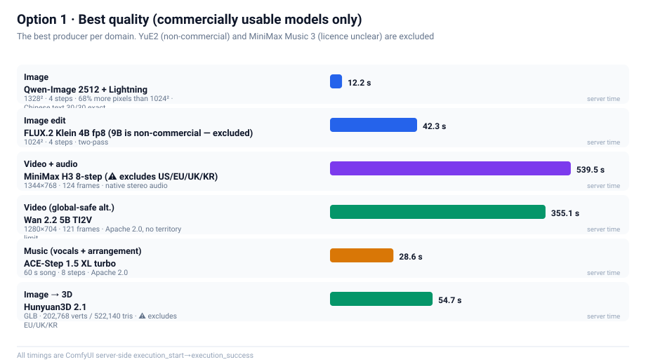
Plan 2 · Efficiency first (best overall value)
Best time-per-quality. All Apache 2.0, no territory limits, no revenue threshold — the zero-friction set.
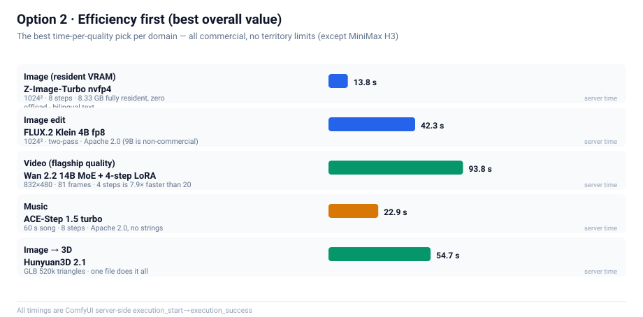
Plan 3 · Scenario matrix
Look up your specific scenario. Your need on the left; the current best answer and its licence boundary on the right.
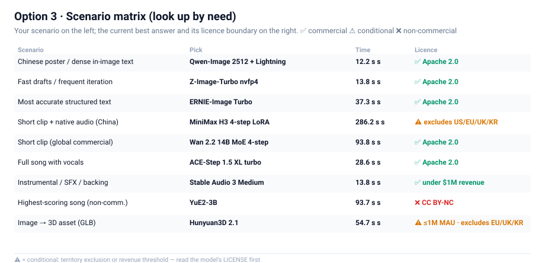
Licence matrix
Check before commercial use. "The weights download" ≠ "the output is commercially usable".
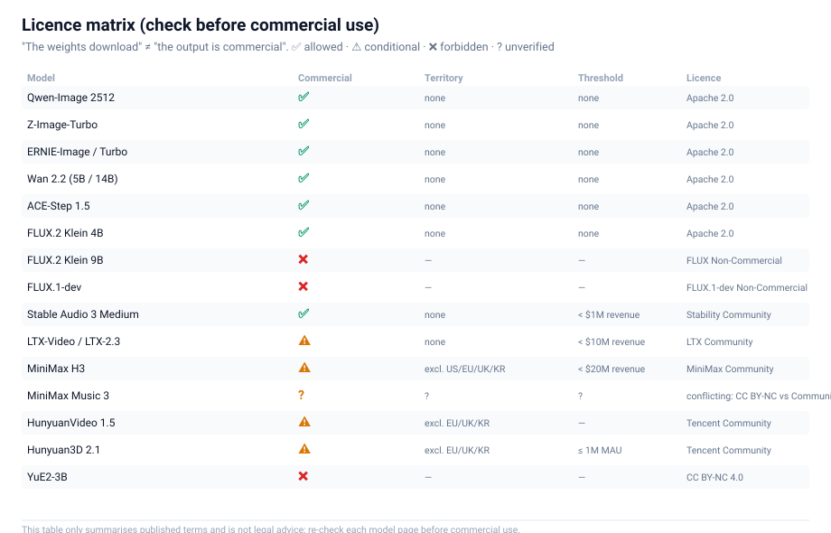
Contents
| Section |
Topic |
What you get |
| 0 |
Hardware and starting point |
Where the real constraint is |
| 1 |
The verdict first |
Every choice in one table |
| 2 |
How we reasoned |
A complete mental model of quantization |
| 3 |
How we downloaded |
Multi-source download engineering |
| 4 |
How we built |
Node constraints bought with pain |
| 5 |
How we measured |
The methodology (the core) |
| 6 |
How we chose |
Image / editing / video / music / 3D — eight lines, measured |
| 7 |
Optimization checklist |
Copy-paste configs |
| 8 |
Troubleshooting |
Symptom → cause → fix |
| 9 |
Toolchain |
Reusable scripts + a template→API converter |
| 10 |
Conclusion |
What is still open |
| 11 |
Final verdict |
The one best pick per domain, with the evidence chain |
| Appendix E |
Coverage audit |
What was run, what was not, and the exact reason for every skip |
| Appendix F |
Licences & legal boundaries |
Each model's licence, commercial usability, four hard constraints |
0. Hardware and starting point
| Item |
Measured value |
| GPU |
RTX 5090 Laptop — 24435 MiB (24 GB), compute capability sm_120 (Blackwell) |
| CUDA |
12.8 |
| System RAM |
64 GB |
| Engine |
ComfyUI 0.37.0 / PyTorch 2.11.0+cu128 / Python 3.11.9 |
| Goal |
Use the newest open-weight models, covering image / video / audio generation |
Why start at 24 GB? Because it is the only genuinely hard constraint in this document.
Raw compute on a modern laptop GPU is never the problem — an 8-step distilled model renders a
1024² image in about ten seconds on a 5090. What decides which models you can and cannot run is
whether the weights fit in VRAM. And the newest generation of open-weight generative models
shares a trend: the base model keeps getting bigger, and it now demands a separate text encoder
that is just as big.
Look at the chart below. Note the 24 GB red line.
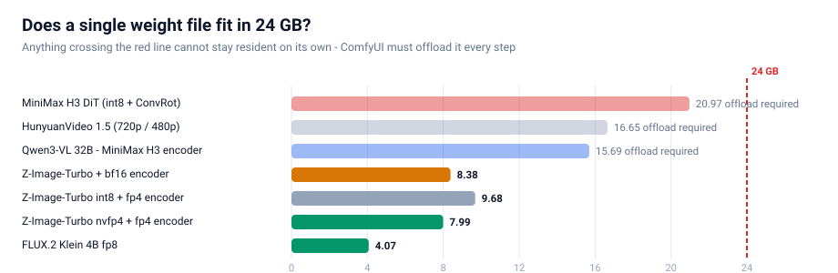
Three of these files — MiniMax H3's DiT at 21 GB, HunyuanVideo 1.5 at 16.7 GB, and MiniMax H3's text
encoder at 15.7 GB — each individually exceeds 24 GB. Which means:
They can never be resident. On every single step, weights must be shuttled between VRAM and
system RAM. That is why "picking the right quantization format" on this machine is not an
optimization. It is the difference between running and not running.
1. TL;DR: the verdict
1.1 Selection table
| Use case |
Model chosen |
Quantization |
Measured time |
Why this one |
| Image (daily driver) |
Z-Image-Turbo |
NVFP4 4.51 GB |
13.8 s (1024²/8 steps) |
Full set is 8.33 GB — stays resident, zero offload |
| Image (high-res / Chinese) |
Qwen-Image 2512 + Lightning |
fp8 20.43 GB |
12.2 s (1328²/4 steps) |
68% more pixels and Chinese text 30/30 exact; cost: offload mandatory |
| Image editing |
FLUX.2 Klein 4B |
fp8 4.07 GB |
42.3 s |
BFL's official fp8 file is only 4.07 GB, quality intact |
| Video (fastest) |
LTX-Video 2B distilled |
fp8 4.46 GB |
19.2 s (1216×704/121 frames) |
Fastest video model we measured; motion is subtle |
| Video (best quality, light tier) |
Wan 2.2 5B TI2V |
fp16 10 GB |
355.1 s (1280×704/121 frames) |
Best prompt adherence and physical plausibility |
| Video (flagship tier) |
Wan 2.2 14B MoE |
fp8 dual-expert 28.6 GB |
93.8 s (832×480/81 frames/4 steps) |
Flagship MoE + LightX2V 4-step LoRA actually runs |
| Video (cinematic + 1080p SR) |
HunyuanVideo 1.5 720p→1080p |
fp16 + SR models |
⚠️ 70 min without finishing — infeasible on 24 GB |
See §6.4, "a negative result" |
| Video + audio |
MiniMax H3 |
int8 + ConvRot |
519.1 s (1344×768/124 frames) |
The only line with a native audio track |
| Music generation |
ACE-Step 1.5 XL turbo |
bf16 9.97 GB |
28.6 s (60 s song) |
Apache 2.0, commercially usable, fastest output |
| Music generation (full song with vocals) |
YuE2-3B |
int8 3.96 GB |
93.7 s (60 s song) |
Highest SongBench score; but cc-by-nc, non-commercial |
| Music generation (LLM-enhanced) |
MiniMax Music 3 |
int8 2.50 GB |
458.2 s (60 s song) |
High quality, an order of magnitude slower |
| Image → 3D |
Hunyuan3D 2.1 |
all-in-one 7.37 GB |
54.7 s |
One file produces a GLB (520k triangles) |
The quantization answer does not change: if the GPU is Blackwell (sm_120/121), always pick NVFP4. Proof in §5.
- Quantization: if the GPU is Blackwell (sm_120/121), always pick NVFP4. Proof in §5.
- Offload or not: sum the base model and the encoder, and compare against VRAM. If the sum
exceeds it, offloading is mandatory — and then every gigabyte quantization saves converts
directly into speed.
- Speed comes from fewer steps, not from smaller weights. An 8-step → 4-step LoRA buys far
more than any weight quantization. Quantization makes the model fit; a distilled LoRA makes
it fast. These are different problems.
2. How we reasoned: framing the constraint
2.1 The only hard constraint is VRAM, not compute
This deserves emphasis, because it determines every subsequent trade-off.
The common intuition — "if VRAM is short, use a smaller model" — does not apply here. The models we
want are the newest and strongest, and they have no small variant. The only free variable is
how many bits each weight occupies.
So the problem compresses into one sentence: what is the fewest bits per weight that costs nothing
visible to the eye?
2.2 The four families of quantization (this is the foundation)
The phrase "4-bit quantization" lumps together three completely different things. Separate them first.
| Family |
Examples |
What is compressed |
Saves VRAM |
Faster |
| W4A16 |
GGUF / NF4 / bitsandbytes / torchao |
weights only |
✅ |
❌ no, often slower |
| W4A4 |
Nunchaku SVDQuant |
weights + activations |
✅ |
✅ |
| INT8 + ConvRot |
Comfy-Org's default for new models |
8-bit weights + rotation compensation |
✅ |
➖ no (runs the BF16 path) |
| NVFP4 |
Blackwell-native 4-bit float |
weights + activations |
✅ |
✅ fastest |
The most important row in that table is the first one.
W4A16 shrinks the weights but must expand them back to 16-bit to compute, so you save memory but
save zero compute — and you pay extra dequantization overhead on top. This is exactly why people
report "I switched to a 4-bit model and it got slower."
Remember it this way: W4A16 saves memory. W4A4 / NVFP4 save memory and bandwidth.
Only the latter actually goes faster.
NVFP4 wins on this machine because it is Blackwell's native 4-bit floating-point format: it feeds
tensor cores directly for 4-bit matrix multiplication, with no "expand first, then compute" round trip.
2.3 How to tell real NVFP4 apart (never trust the filename)
This is a trap we walked into. A great many community files named fp4 or nvfp4 are actually a
different format, or only partially 4-bit.
The only reliable test is the tensor keys inside the safetensors file. Open the header (first 8
bytes, little-endian uint64 = header length → JSON) and look for this set:
weight_scale
weight_scale_2
input_scale
pre_quant_scale
TensorCoreNVFP4Layout (group_size = 16)
A verified real NVFP4 file on this machine shows both F8_E4M3 (for block scales) and U8 in its
dtype list. For example:
z_image_turbo_nvfp4.safetensors 4.51 GB 993 tensors BF16, F32, F8_E4M3, U8 ✅ real NVFP4
qwen_3_4b_fp4_mixed.safetensors 3.48 GB 1081 tensors BF16, F32, F8_E4M3, U8 ✅ real NVFP4
The decision tree below is the complete selection logic:
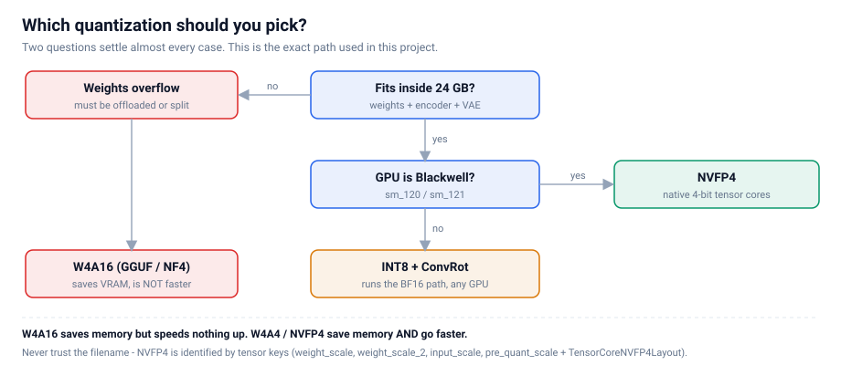
3. How we downloaded: moving several hundred GB
Downloading looks trivial until you multiply hundreds of gigabytes by unstable mirrors. A
naive implementation can spend a whole day on it. We ran two batches: the first at
34 files / 125.6 GB, the second at 66 files / 332.8 GB (the four music lines + Wan 2.2 14B +
HV1.5 super-resolution + Stable Audio 3) — both with zero corruption, built on three mechanisms.
3.1 Throughput, measured

The gap is an order of magnitude: modelscope is 7× faster than hf-mirror and 12× faster than
huggingface. Multi-source fallback is therefore not a nicety — it is mandatory.
3.2 Mechanism one: three-tier fallback
Each file tries: www.modelscope.cn → hf-mirror.com → huggingface.co
If a source fails, fall through to the next. The .part resume file is reusable across sources
(both ends serve byte-identical content — verified).
3.3 Mechanism two: a silent watchdog (this one is essential)
This was our deepest trap.
We originally set a 45-second socket timeout. Then a file sat at 4.6%, 0.0 MB/s, for 19 minutes
without raising a single error. The cause is nasty: the server dribbled a few KB every 30 seconds,
which was just enough to keep the socket alive while making no real progress.
Lesson: a socket timeout cannot catch a "slow drip" stall. You need a second, application-level
watchdog: if the byte count makes no real progress for 150 seconds, actively disconnect and
retry; after 3 consecutive silent stalls, abandon that source and let the caller switch.
With this layer in place, the same network conditions never produced another infinite hang.
3.4 Mechanism three: Range probing and concurrency
modelscope does not support HEAD requests, so you cannot get a file size the normal way — and
without a size you cannot verify anything. The fix is to range-request a single byte and read the
total from the response header:
Range: bytes=0-0
→ HTTP/1.1 206 Partial Content
Content-Range: bytes 0-0/16748116224 # ← the true byte count
Once you have the expected size, three things become possible:
- Probe sizes concurrently (probe only, no download) → know the total and prioritise early
- Compare byte counts after download → detect truncation and corruption precisely
- Cross-validate two sources → the same file should report the same size on both
We got this wrong once. While four parallel downloads were saturating the link, we probed the
other sources — every probe timed out, and we concluded, incorrectly, that "both mirrors are
unavailable, so the user must download manually."
They were perfectly healthy. The bandwidth was simply fully consumed.
Lesson: probe requests (speed tests, availability checks) and download requests compete for the
same bandwidth. Either probe while idle, or rate-limit the probes separately.
4. How we built: ComfyUI node constraints
With the models on disk, the next job is turning them into a runnable graph. ComfyUI's official
workflows live in two places:
ComfyUI/blueprints/*.json — 116 official blueprintssite-packages/comfyui_workflow_templates_json/templates/ — the same set
But they cannot be submitted as an API prompt directly, because they are in subgraph format:
node types are UUIDs, and the real topology is buried inside definitions.subgraphs. We wrote
bp_dump.py to flatten a subgraph into a node-and-wire listing — far more reliable than guessing the
topology by hand.
4.1 Four node constraints you must know
| # |
Constraint |
Detail |
| 1 |
CLIPLoader has 29 types and hunyuan_video_15 is not one of them |
HunyuanVideo 1.5 requires DualCLIPLoader (type=hunyuan_video_15) with qwen_2.5_vl_7b_fp8_scaled + byt5_small_glyphxl_fp16 |
| 2 |
Z-Image's type is lumina2; FLUX.2's is flux2 |
The same qwen_3_4b encoder is loaded with different types in the two models. Mixing them up is an error |
| 3 |
MiniMaxH3ImageToVideo has first_frame as optional |
Leave it unconnected → pure text-to-video, with audio. A node named "ImageToVideo" is not necessarily image-only |
| 4 |
HunyuanVideo15ImageToVideo has start_image as optional |
Same story: unconnected = text-to-video |
Points 3 and 4 were our biggest correction of an assumption: when you see ImageToVideo, first
check whether the image input is optional. If it is, the node also works as text-to-video.
4.2 What to do when there is no official blueprint
HunyuanVideo 1.5 has no official blueprint. You have to build the graph by hand from node
signatures. Order matters:
- Check
DualCLIPLoader's type list to confirm hunyuan_video_15 exists
- Confirm the latent channel count (1.5 uses 32 channels and spatial downsampling of 16 — unlike 1.0)
- After building, run the free validation trick below
4.3 A free graph-validation trick (highly recommended)
While models are still downloading, a direct POST /prompt returns HTTP 400 with per-node
node_errors. The key insight:
If the only errors are value_not_in_list — meaning "that model file is not in the list" — then
the graph's structure and types are entirely correct.
That gives you a zero-cost dry run: you can validate a workflow before its weights finish
downloading. All seven workflows in this project were validated this way before the downloads completed.
5. How we measured: the controlled A/B (the core of this document)
This is the most valuable section here, because we got it wrong the first time.
5.1 A plausible conclusion that was wrong
In the first comparison we ran two Z-Image-Turbo variants (int8 and nvfp4) and got:
PSNR = 13.82 dB
What does 13.82 dB mean? Conventionally, anything below 20 dB means "two visibly different images."
Our conclusion at the time: "4-bit quantization really does degrade quality. NVFP4 is not good
enough."
That conclusion was wrong, because we made a methodological error:
❌ The two variants used different text encoders.
The int8 build was paired with qwen_3_4b.safetensors (bf16); the nvfp4 build with
qwen_3_4b_fp4_mixed.safetensors (fp4).
So encoder differences were baked into that 13.82 dB. Quantization was never the culprit.
5.2 Why PSNR cannot be used naively on generative models
Before fixing the method, you have to internalise a counter-intuitive fact:
Diffusion sampling is chaotic.
Two models whose values agree to four decimal places will produce two completely different
compositions after 8 sampling steps. This is not a bug — it is the nature of the process; sampling
keeps amplifying tiny differences.
So "these two images have low PSNR" does not prove "one of them is worse." It only proves "these
are two different samples."
To judge whether quantization damages quality, you need something else entirely: a noise baseline.
5.3 Designing the four-way control
We isolated the variable completely — identical encoder, identical prompt, identical 1024²/8-step
configuration, with only the DiT quantization differing — and then added two "only the random
seed changed" controls:
| Arm |
Variable |
Purpose |
| det |
none (same quant, same seed, re-run) |
Determinism check: is the pipeline reproducible? |
| seed |
random seed only (within int8) |
Noise floor |
| cross |
quantization only (same seed) |
The thing being measured |
| seedB |
random seed only (within nvfp4) |
Noise floor (second copy) |
The test: if cross similarity is higher than seed similarity, then the perturbation
caused by quantization is smaller than the randomness of sampling — meaning quantization error is
negligible.
5.4 Results
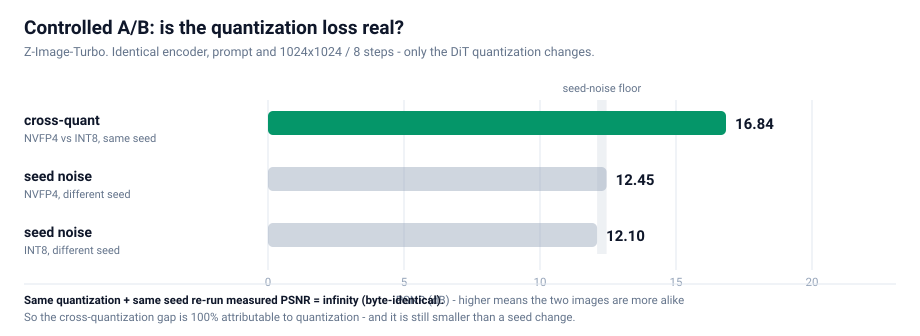
| Arm |
Variable |
PSNR |
Mean pixel difference |
| det same quant, same seed, re-run |
none |
∞ dB |
0.00% |
| seed int8, different seed |
seed only |
12.10 dB |
16.89% |
| cross nvfp4 vs int8, same seed |
quantization only |
16.84 dB |
7.41% |
| seedB nvfp4, different seed |
seed only |
12.45 dB |
16.43% |
5.5 Three hard conclusions
Conclusion one: the pipeline is deterministic.
The det arm measured PSNR = ∞ — the two images are byte-for-byte identical. This single fact
is what makes the whole experiment attributable: since identical inputs necessarily produce
identical outputs, the difference in the cross arm is 100% attributable to the quantization
format itself, with zero runtime noise mixed in.
Had this failed — had a re-run produced a different image — then no cross-quantization difference
could be attributed to anything, and the experiment would have been worthless.
Conclusion two: quantization perturbation < sampling noise.
cross difference (7.41%) < seed difference (16.89%)
Changing the quantization format alters the image less than picking a different random seed.
That is the hard evidence that quantization is not costing quality.
Conclusion three: quality proxy metrics show no systematic difference.
PSNR is sensitive to trajectory divergence, so we measured five robust proxies as well:
| Sample |
Sharpness (Laplacian variance) |
Shannon entropy |
High-frequency ratio |
| int8 · seed A |
776.5 |
5.572 |
0.0130 |
| int8 · seed B |
705.4 |
5.736 |
0.0134 |
| nvfp4 · seed A |
694.3 |
5.614 |
0.0127 |
| nvfp4 · seed B |
604.1 |
5.791 |
0.0140 |
The spread caused by changing only the seed within one quantization (int8: 776.5 → 705.4) already
covers the entire cross-quantization difference (776.5 → 694.3). In other words: the quantization
factor is drowned inside the seed factor's variance.
Color histogram L1 distance agrees:
det = 0.0000 | cross = 0.0858 | seedB = 0.1085 | seed = 0.1256
↑ cross-quant ↑ within-seed ↑ within-seed
The color-distribution difference across quantizations is smaller than the difference caused by
changing the seed.
5.6 Final review: do they look the same?
Numbers aside, we did a human eye check. Four images laid out 2×2, deliberately arranged so that
reading down a column = same seed, different quantization and reading across a row = same
quantization, different seed:
┌──────────────────────┬──────────────────────┐
│ INT8 · seed 20260922│ INT8 · seed 20260923│
├──────────────────────┼──────────────────────┤
│ NVFP4 · seed 20260922│ NVFP4 · seed 20260923│
└──────────────────────┴──────────────────────┘
↑ column: same seed, cross-quant ↑ row: same quant, cross-seed
The result matches the numbers exactly:
- Down a column (same seed, cross-quantization) → highly similar compositions (both expose
the same distant rock spires on the left)
- Across a row (same quantization, different seed) → entirely different compositions
All four are competent, high-quality Huangshan sunrise renderings — semantically correct, richly
detailed, free of artifacts. Quantization is not the variable. The seed is.
5.7 The methodology, distilled (reusable for any model)
Any "does quantization hurt quality?" comparison must satisfy three conditions:
- Controlled: encoder, prompt, resolution, steps, sampler, and CFG all fixed — change one variable at a time
- Has a noise baseline: you must also measure "same quantization, different seed", or you cannot
separate quantization perturbation from sampling randomness
- Has a determinism check: "same quantization + same seed" must reproduce byte-identically,
or the conclusion is not attributable
Miss any one of these and the PSNR number will be misread.
6. How we chose: eight model lines in practice
6.1 Image generation — Z-Image-Turbo vs Qwen-Image 2512
Both lines run, and their results are close — so we need to explain why we keep both.
Z-Image-Turbo (the daily driver)
| Item |
Value |
| DiT |
z_image_turbo_nvfp4.safetensors — 4.51 GB (int8 build is 6.20 GB) |
| Text encoder |
qwen_3_4b_fp4_mixed.safetensors — 3.48 GB |
| VAE |
ae.safetensors — 0.34 GB |
| Total footprint |
8.33 GB |
| Key parameters |
CLIPLoader type = lumina2; ModelSamplingAuraFlow shift=3; KSampler 8 steps, CFG=1 |
| Measured |
int8 17.7 s / nvfp4 13.8 s (1024², 8 steps) |
Its real advantage is a single point, but a hard one: the whole 8.33 GB stays resident in 24 GB,
with zero offload. No step ever needs weights shuffled between VRAM and system RAM — the
least fussy option for heavy, continuous use.
Qwen-Image 2512 + Lightning (high resolution / Chinese text)
| Item |
Value |
| DiT |
qwen_image_2512_fp8_e4m3fn.safetensors — 20.43 GB |
| Text encoder |
qwen_2.5_vl_7b_fp8_scaled.safetensors — 9.38 GB |
| VAE |
qwen_image_vae.safetensors — 0.25 GB |
| Total footprint |
30.06 GB (over 24 GB, offload mandatory) |
| Acceleration LoRA |
Qwen-Image-2512-Lightning-4steps-V1.0-fp32.safetensors — 1.58 GB |
| Key parameters |
CLIPLoader type = qwen_image; ModelSamplingAuraFlow shift=3.1; with/without LoRA goes through the official ComfySwitchNode (steps 50↔4, CFG 4.0↔1.0) |
| Measured |
without LoRA 206.7 s (1328², 50 steps) → with LoRA 12.2 s (1328², 4 steps) |
It wins on two points:
- Higher resolution: 1328² carries 68% more pixels than Z-Image's 1024², at slightly
less time (12.2 s vs 13.8 s)
- Chinese text rendering verified character by character: we rendered 「春风得意马蹄疾 /
一日看尽长安花」 plus 「茶香四溢 静心品茗 八方来客 岁月悠长」 and got 30/30 characters exact,
zero typos, zero missing strokes (202.7 s / 50 steps)
⚠️ A correction to our own earlier work: an early version of this document listed
"accurate Chinese text rendering" as a reason to pick Z-Image-Turbo. That was wrong.
The 30/30 acceptance run above used Qwen-Image 2512, not Z-Image; Z-Image's Chinese
rendering ability was never tested on its own. That early version also never mentioned
Qwen-Image at all — an omission, now fixed here.
Verdict: keep both, split by use case.
- Frequent sketches, clean VRAM budget → Z-Image-Turbo (8.33 GB fully resident)
- High-resolution output, Chinese text in frame → Qwen-Image 2512 + Lightning
Worth recording separately: the Lightning LoRA took the same model from 206.7 s to 12.2 s — 16.9×
faster — with detail, if anything, more present. This again confirms the §2 rule:
speed comes from fewer steps, not from smaller weights.
6.2 Image editing — FLUX.2 Klein 4B
| Item |
Value |
| DiT |
flux-2-klein-4b-fp8.safetensors — 4.07 GB |
| Encoder |
qwen_3_4b_fp4_flux2.safetensors — 3.85 GB |
| Key parameters |
CLIPLoader type = flux2; ReferenceLatent ×2; Flux2Scheduler 20 steps; CFGGuider CFG=5 |
| Measured |
42.3 s |
A counter-intuitive finding: BFL's official fp8 single file is only 4.07 GB, whereas the bf16
build is 7.75 GB — fp8 costs essentially nothing in quality and halves the size. When a vendor
ships the good stuff directly, take it.
An even more counter-intuitive point: the 9B NVFP4 build is only 5.76 GB — smaller than the 4B
bf16 build (7.75 GB). A bigger model in a smaller file. That is the value of 4 bits.
6.3 Video + audio — MiniMax H3
This is the heaviest line here, because it generates picture and sound together.
| Item |
Value |
| DiT |
minimax_h3_fl2va_pruned_int8_convrot.safetensors — 20.97 GB |
| Text encoder |
qwen3vl_32b_minimax_h3_nvfp4_awq.safetensors — 15.69 GB |
| Video VAE |
minimax_h3_video_vae_fp16.safetensors — 5.21 GB |
| Audio VAE |
minimax_h3_audio_vae_fp32.safetensors — 0.61 GB |
| Accelerator LoRA |
4-step / 8-step turbo, 1.96 GB each (the official blueprint uses 8-step) |
| Key parameters |
BasicScheduler(simple, 8 steps) + KSamplerSelect(res_multistep) + SamplerCustomAdvanced; do not use MiniMaxH3SigmaShift |
| Measured |
smoke 768×448/56 frames = 76.3 s; full 1344×768/124 frames = 519.1 s |
Offloading is mandatory. The DiT (21 GB) plus the encoder (15.7 GB) is 36.7 GB — far beyond 24 GB.
So every generation shuttles weights between VRAM and RAM. That, not raw compute, is why it takes
519 seconds.
Output verification (a step you must not skip): ffprobe confirms
h264 / 1344×768 / 24fps / 5.17 s + aac 32 kHz stereo. Extracting four frames into a contact sheet
shows the imagery matching the prompt's timeline (an RGB-split "COMFYUI" title → chrome palm trees →
sunset). This is not noise. It is usable video with usable audio.
6.4 Video only — three lines, each with one hard reason
We ran three video-only lines, and the conclusion is clean: they do not replace each other,
they are three different trade-offs.
LTX-Video 2B distilled — the fastest
| Item |
Value |
| DiT + VAE |
ltxv-2b-0.9.8-distilled-fp8.safetensors — 4.46 GB (all-in-one, VAE included) |
| Text encoder |
t5xxl_fp8_e4m3fn.safetensors — 4.89 GB (CLIPLoader type = ltxv) |
| Key parameters |
EmptyLTXVLatentVideo → LTXVConditioning → LTXVScheduler (steps=8) → SamplerCustom (cfg=1, the distilled build is CFG-free) |
| Measured |
768×512/97 frames = 11.7 s; 1216×704/121 frames = 19.2 s |
19.2 seconds for 5 seconds of 1216×704 video — the fastest we measured, 18× faster than Wan 2.2 5B.
The cost is noticeably smaller motion: the frames are stable and semantically correct (teacup,
bamboo tray, rain-streaked window all present), but the push-in is very gentle. Good for "check the
composition and style fast"; not for "I need visible action".
Wan 2.2 5B TI2V — the best quality
| Item |
Value |
| DiT |
wan2.2_ti2v_5B_fp16.safetensors — 10.00 GB |
| Text encoder |
umt5_xxl_fp8_e4m3fn_scaled.safetensors — 6.74 GB (CLIPLoader type = wan) |
| VAE |
wan2.2_vae.safetensors — 1.41 GB |
| Key parameters |
ModelSamplingSD3 shift=8; KSampler 20 steps, CFG=5, uni_pc / simple; Wan22ImageToVideoLatent (start_image is optional — leave it unconnected for pure text-to-video) |
| Measured |
704×384/49 frames = 34.6 s; 1280×704/121 frames = 355.1 s |
This is the best video quality of the whole round. With one prompt (a hummingbird hovering at
red flowers, wings beating fast, slow lateral camera move), the output shows clear motion blur on
the wings, the bird's position changing frame by frame, and correct depth-of-field layering —
every element of the prompt landed in the picture. The cost is speed: 355 seconds for 5 seconds.
wan2.2_ti2v_5B stands for TI2V = Text + Image to Video — it does both.
This also confirms the general observation from §4.1: when a node is called ImageToVideo,
first check whether its image input is optional — Wan22ImageToVideoLatent.start_image is
optional, so leaving it unconnected gives you pure text-to-video.
Wan 2.2 14B MoE — the flagship tier, genuinely runnable with a 4-step LoRA
| Item |
Value |
| DiT |
wan2.2_t2v_high_noise_14B_fp8_scaled + wan2.2_t2v_low_noise_14B_fp8_scaled — 14.29 GB each (dual experts) |
| Acceleration LoRA |
wan2.2_t2v_lightx2v_4steps_lora_v1.1_high_noise + ..._low_noise — 1.23 GB each |
| VAE |
wan_2.1_vae.safetensors 0.25 GB — note: not the same as the 5B line's wan2.2_vae |
| Key parameters |
two UNETLoaders → two LoraLoaderModelOnly → two ModelSamplingSD3 (shift=5), with one PrimitiveBoolean driving five ComfySwitchNodes (model / steps 20↔4 / boundary step / CFG 3.5↔1.0); a two-stage KSamplerAdvanced relay (high-noise expert add_noise=enable → low-noise expert add_noise=disable) |
| Measured |
93.8 s (832×480 / 81 frames / 4 steps) |
What this line proves is that a flagship MoE video model is usable on a 24 GB laptop.
The two experts total 28.6 GB, far beyond VRAM, but because only one expert is loaded per step,
combined with the LightX2V 4-step LoRA (collapsing 20 steps into 4), it actually finishes in 94 seconds.
⚠️ Trap we hit (worth recording separately): we substituted the template's wan_2.1_vae with the
wan2.2_vae we already had, and VAEDecode failed immediately:
Given groups=1, weight of size [48, 48, 1, 1, 1],
expected input[1, 16, 21, 60, 104] to have 48 channels, but got 16 channels instead
Root cause: Wan 2.2's 5B line and 14B line do not use the same VAE (5B → wan2.2_vae,
14B → wan_2.1_vae), and the two have different channel counts (48 vs 16). Only the official
templates settle it — every video_wan2_2_14B_* template points at wan_2.1_vae, and only the
video_wan2_2_5B_* ones point at wan2.2_vae.
Lesson: a similar filename is not a substitute. Use exactly what the template specifies.
HunyuanVideo 1.5 — cinematic, with built-in 1080p super-resolution
| Item |
Value |
| DiT |
hunyuanvideo1.5_480p_t2v_fp16.safetensors / ..._720p_t2v_fp16.safetensors — 16.65 GB each |
| Text encoder |
DualCLIPLoader (type=hunyuan_video_15) = qwen_2.5_vl_7b_fp8_scaled + byt5_small_glyphxl_fp16 |
| VAE |
hunyuanvideo15_vae_fp16.safetensors — 2.52 GB |
| Accelerator LoRA |
hunyuanvideo1.5_t2v_480p_lightx2v_4step_lora_rank_32_bf16.safetensors — 0.34 GB |
| SR branch |
hunyuanvideo1.5_1080p_sr_distilled_fp16 16.66 GB + hunyuanvideo15_latent_upsampler_1080p 0.20 GB |
| Measured |
480p/121 frames/4 steps = 117.0 s; 720p→1080p: ran a full 70 minutes without finishing, terminated |
⚠️ On the 720p tier, we have to report a negative result.
We ran the official 720p → 1080p super-resolution pipeline end to end (base 20 steps + SR 8 steps) and
on a 24 GB laptop it ran a full 70 minutes without finishing, so we terminated it — which is
itself the finding:
The 720p + SR path is not viable on a 24 GB laptop.
No single step of the official template is "slow but bearable" — the baseline is simply far
outside the acceptable range. If you need 1080p, the practical route is to render at 480p/720p
and then use a separate upscaling pass, or switch to a line with no extra SR stage such as
Wan 2.2 or LTX.
We state this explicitly because "it does not run" and "it runs slowly" are different kinds of
information, and community workflow posts overwhelmingly report only successes. This path is
infeasible on 24 GB — that is its only conclusion.
⚠️ A crucial conceptual distinction: 480p / 720p / i2v / SR are four different base
models, not one model at different resolutions. The resolution in the filename is part of the
model's identity.
Its most distinctive feature is that the official 720p template is itself a 720p → 1080p
super-resolution pipeline: the base produces 1280×720 → LatentUpscaleModelLoader upscales the
latent to 1920×1080 → a dedicated SR distilled model (8 steps, split at 4 by SplitSigmas) refines
it, and both resolutions are saved as separate videos. In other words this line produces true
1080p, not a 720p upscale.
Four-step generation is the biggest win at the 480p tier — 117 seconds for 5 seconds of video,
usable as an iteration sketch. Recommended workflow: prototype prompts at 480p, then commit to 720p.
Output verification: ffprobe confirms h264 / 848×480 / 24fps / 121 frames / 5.04 s. A frame
contact sheet shows a temporally stable, subject-consistent result — "a pottery studio: the wheel
slowly turns, wet clay is pulled taller into a vase between two hands, warm rim light from the left,
blurred wooden shelves of bisque ware behind" — every element of the prompt is present.
Same-prompt comparison (this matters more than the table above)
The table above lists each config separately. A real comparison needs the same prompt — we ran
all three lines on one identical Chinese prompt ("extreme close-up: a hummingbird hovers at red
flowers sipping nectar, wings beating fast, sunlight through the petals, bokeh background, slow
lateral camera move"):
| Model |
Prompt |
Resolution/frames |
Exec |
Followed the prompt? |
| Wan 2.2 5B TI2V |
Chinese (same) |
1280×704 / 121 frames |
355.1 s |
✅ fully (hummingbird, red flowers, wing blur, shallow DoF all present) |
| MiniMax H3 8-step |
Chinese (same) |
1344×768 / 124 frames |
539.5 s |
✅ fully — composition and detail arguably better than Wan |
| LTX-Video 2B distilled |
Chinese (same) |
1216×704 / 121 frames |
23.2 s |
❌ completely unrelated (a Mediterranean coastline; no hummingbird) |
LTX produced an entirely unrelated scene — not a rendering error, the prompt was simply not
followed. We ran a three-step diagnosis:
- Switch to the English version of the same prompt → still the same coastline → rules out
"Chinese not supported"
- Change the seed (20260922 → 777) → still the coastline → rules out bad luck
- Switch to a completely different common prompt ("a red sports car driving on a desert highway
at sunset") → the output became a parking lot / road (road, arid terrain — but no car)
Conclusion: LTX-Video 2B distilled at CFG=1 / 8 steps has very weak prompt adherence. It captures
the broad scene type (outdoor, road, arid) but not specific subjects (a hummingbird, a sports
car). The cause is the configuration we chose for speed — distilled + CFG-free + 8 steps — and
that speed is paid for with prompt adherence.
This is the most important counter-example in the document: "it runs fast" and "it is usable"
are two different things. LTX is 18× faster, but at CFG=1 / 8 steps it cannot reliably render
what the prompt asks for. If you need prompt adherence, either raise CFG/steps (and get slower)
or use Wan / MiniMax H3.
Choosing between the three
| What you need |
Pick |
Why |
| Reliably following the prompt |
Wan 2.2 5B / MiniMax H3 |
Both follow fully; MiniMax H3 has better detail and ships audio |
| Blind material generation |
LTX-Video 2B |
19 seconds a clip, but the content is not controllable |
| Best quality / believable action (light) |
Wan 2.2 5B |
Best prompt adherence and physical plausibility; ~6 minutes |
| Best quality (flagship) |
Wan 2.2 14B MoE |
Dual experts + 4-step LoRA — the flagship in 94 seconds |
| 1080p |
⚠️ no workable option yet |
HV1.5's 720p+SR ran 70 minutes without finishing on 24 GB (see the HunyuanVideo 1.5 block above) |
| Need sound |
MiniMax H3 (§6.3) |
The only line with a native audio track |
6.5 The one that does not run — FLUX.2 Klein 9B
This is the only line we could not get running, and the reason is instructive.
The error:
mat1 and mat2 shapes cannot be multiplied (1024x7680 and 12288x4096)
Root cause: the 9B model needs a Qwen3-VL text encoder of roughly 16.4 GB, and BFL ships it
only in diffusers sharded format — which ComfyUI cannot load.
This is not a VRAM problem, and not a quantization problem. It is a weight-packaging problem.
Three ways out:
- Wait for ComfyUI's official single-file packaging of the encoder
- Merge the diffusers shards into a ComfyUI-loadable single file yourself (16.4 GB download plus a conversion script)
- Use the 4B — 42.3 seconds per image, and it is enough
Lesson: when picking a model, check not only "does it fit in VRAM" but also "is its weight
format loadable by my tooling?" Many people overlook this precondition.
6.6 Music generation — a whole field filled in from zero
This was the biggest coverage gap: image and video were done long ago, while music had not been
touched at all. (Worth distinguishing: MiniMax H3's audio track is video accompaniment —
sound effects and ambience; it is not "generate a song from lyrics".)
We ran all four music lines that ComfyUI 0.37 supports natively:
| Model |
License |
Weights |
Parameters |
Measured |
Notes |
| ACE-Step 1.5 turbo |
Apache 2.0 |
DiT 4.79 GB + encoders 1.19/1.19 GB + VAE 0.34 GB |
TextEncodeAceStepAudio1.5 (tags/lyrics/language/BPM/duration) → EmptyAceStep1.5LatentAudio → KSampler 8 steps CFG=1 |
22.9 s / 60 s song |
Fastest, commercially usable |
| ACE-Step 1.5 XL turbo |
Apache 2.0 |
DiT 9.97 GB + encoders 1.19/8.38 GB + VAE 0.34 GB |
same (XL swaps the encoder to qwen_4b) |
28.6 s / 60 s song |
Higher quality, still commercially usable |
| YuE2-3B |
⚠️ cc-by-nc (non-commercial) |
yue2_3b_int8_convrot 3.96 GB (all-in-one) |
two stages: YuE2GenerateABC (32-step AR score planning) → YuE2GenerateMusic → KSampler dpm_2/sgm_uniform 32 steps |
93.7 s / 60 s song |
Full song with vocals, zh+en lyrics; highest SongBench score |
| MiniMax Music 3 |
see repo |
DiT 2.50 GB + encoder 9.20 GB + VAE 0.22 GB |
MiniMaxMusic3TextEncode (caption/lyrics) → KSampler 30 steps CFG=1.7 |
458.2 s / 60 s song |
Quality-oriented, an order of magnitude slower |
Output verification (all checked with ffprobe):
ace15_turbo_song mp3 48 kHz stereo 60.00 s 245 kbps
ace15_xl_turbo_song mp3 48 kHz stereo 60.00 s 231 kbps
yue2_text2music flac 48 kHz stereo 60.00 s
minimax_music3_song mp3 44.1 kHz stereo 59.99 s
How to choose:
- Need commercial use → ACE-Step 1.5. Apache 2.0 means no revenue threshold, no territory
exclusion — that is its biggest asset. It is also the fastest (29 seconds for a 60-second song),
making it the best combined choice on quality / speed / licensing.
- Need the best full-song quality and it is not commercial → YuE2. It is the only one with a
two-stage structure ("an LLM plans an ABC score first, then audio is generated") and it tops the
benchmarks; but cc-by-nc forbids commercial use.
- MiniMax Music 3 is quality-oriented but 16× slower — not worth it unless you have a specific reason.
An easy licensing trap: open music models have far messier licences than video/image models.
Several popular ones (MusicGen, early Stable Audio Open) are CC-BY-NC — the weights download
fine, but the output cannot be used commercially. "It runs" and "you may use it" are two
different things here.
6.7 Image → 3D — Hunyuan3D 2.1
| Item |
Value |
| Weights |
hunyuan_3d_v2.1.safetensors — 7.37 GB (all-in-one: includes VAE + CLIP-Vision, loaded by a single ImageOnlyCheckpointLoader) |
| Key parameters |
CLIPVisionEncode → Hunyuan3Dv2Conditioning; EmptyLatentHunyuan3Dv2 resolution=4096; KSampler 30 steps CFG=5; VAEDecodeHunyuan3D octree_resolution=256, num_chunks=8000 → VoxelToMesh (surface net, threshold 0.6) → SaveGLB |
| Measured |
54.7 s |
The pipeline is three chained steps: first Z-Image renders a clean object image (a blue-and-white
porcelain teapot on a plain white background, 15.0 s), it is copied into input/, then image-to-3D runs.
Output verification (parsing the GLB binary header + JSON chunk directly):
magic = "glTF" version = 2 file length = 8,701,344
meshes = 1
primitive: vertices = 202,768 triangles = 522,140
materials = 1 nodes = 1
A usable 520k-triangle mesh — not a point cloud, not voxel blocks, but a standard glTF 2.0 asset
with a material, ready for Blender or a game engine.
6.8 Benchmark summary
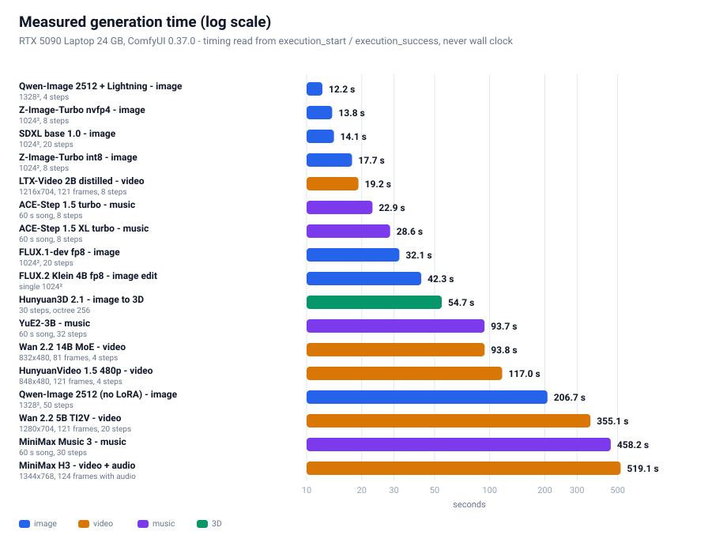
All times are read from ComfyUI's server-side execution_start / execution_success timestamps —
never wall-clock time or API round-trip time, which would fold queueing and model-loading into
the number and inflate it.
Image
| Model |
Configuration |
Server-side time |
| Qwen-Image 2512 + Lightning |
1328² / 4 steps |
12.2 s |
| Z-Image-Turbo nvfp4 |
1024² / 8 steps |
13.8 s |
| SDXL base 1.0 |
1024² / 20 steps |
14.1 s |
| Z-Image-Turbo int8 |
1024² / 8 steps |
17.7 s |
| FLUX.1-dev fp8 |
1024² / 20 steps |
32.1 s |
| FLUX.2 Klein 4B fp8 |
1024² edit |
42.3 s |
| Qwen-Image 2512 (no LoRA) |
1328² / 50 steps |
206.7 s |
Video
| Model |
Configuration |
Server-side time |
| LTX-Video 2B distilled (smoke) |
768×512 / 97 frames |
11.7 s |
| LTX-Video 2B distilled |
1216×704 / 121 frames |
19.2 s |
| Wan 2.2 5B TI2V (smoke) |
704×384 / 49 frames |
34.6 s |
| Wan 2.2 14B MoE (4-step LoRA) |
832×480 / 81 frames |
93.8 s |
| HunyuanVideo 1.5 480p 4-step |
848×480 / 121 frames |
117.0 s |
| Wan 2.2 5B TI2V |
1280×704 / 121 frames |
355.1 s |
| MiniMax H3 t2va 8-step |
1344×768 / 124 frames (with audio) |
519.1 s |
HunyuanVideo 1.5 720p→1080p |
1280×720 → 1920×1080 / 121 frames |
70 min without finishing, terminated |
Music / 3D
| Model |
Configuration |
Server-side time |
| ACE-Step 1.5 turbo |
60 s song / 8 steps |
22.9 s |
| ACE-Step 1.5 XL turbo |
60 s song / 8 steps |
28.6 s |
| Hunyuan3D 2.1 |
30 steps, 4096 latent, octree 256 |
54.7 s |
| YuE2-3B |
60 s song / 32 steps |
93.7 s |
| MiniMax Music 3 |
60 s song / 30 steps |
458.2 s |
An honest note: we timed Z-Image twice and got 20.9 / 15.8 s and 17.7 / 13.8 s.
Run-to-run variance in absolute terms is about ±15% (a laptop GPU throttles against thermal and
power limits), but the relative result — nvfp4 is 22–25% faster than int8 — held in both runs.
When reporting performance, relative percentages are far more trustworthy than absolute values.
7. Optimization checklist (configs you can copy)
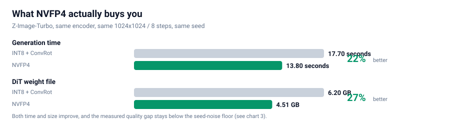
7.1 Ordered by payoff
| Priority |
Optimization |
Payoff |
Cost |
| P0 |
Use NVFP4 for every 4-bit model |
22% faster, 27% smaller, no measurable quality change |
none |
| P0 |
Use a distilled LoRA to cut steps (8 → 4) |
up to 2× faster |
tune the LoRA strength |
| P1 |
Tiled VAE decode (VAEDecodeTiled) |
avoids transient OOM at high resolution |
slightly slower |
| P1 |
Free VRAM before each run (POST /free) |
avoids leftovers breaking sequential runs |
none |
| P2 |
Restart or force-unload when switching model families |
avoids fragmentation |
extra waiting |
| P2 |
Prototype long video prompts at 480p, commit at 720p |
saves a lot of trial time |
none |
7.2 Two VRAM traps you must know
Trap one: ComfyUI does not release models on its own.
After generating one image, the model is still resident. Chaining a second generation — especially a
video — very easily OOMs. Fix: call
POST /free {"unload_models": true, "free_memory": true} before each submission.
⚠️ Note that /free returns an empty body. Do not try to parse it as JSON, or you will get a
JSONDecodeError.
Trap two: the transient peak in VAE decoding.
VAE decoding of high-resolution images or video creates a transient VRAM spike on the final step
(several GB), producing the classic "the transformer finished and then it died at the last step."
Fix: use VAEDecodeTiled.
8. Troubleshooting table
| Symptom |
Actual cause |
Fix |
| Download stalls at some percentage, 0.0 MB/s, no error |
"Slow drip" defeats the socket timeout |
Add an application-level silent watchdog: 150 s without real progress → disconnect and retry |
| Every source probe times out |
Bandwidth already saturated by concurrent downloads |
Probe while idle, or rate-limit probes separately |
| Downloader starts with a huge slow file and the queue dies |
An hf-only file holds the worker |
Sort pending work by whether a fast source exists |
POST /prompt returns 400 |
Missing model or a bad graph |
Read node_errors: only value_not_in_list → the graph is fine |
| HunyuanVideo 1.5 reports an encoder type error |
CLIPLoader has no hunyuan_video_15 |
Use DualCLIPLoader |
| Z-Image reports a CLIP type error |
It needs lumina2, not qwen |
Change the type |
| FLUX.2 reports a CLIP type error |
It needs flux2 |
Change the type |
You want text-to-video but the node says ImageToVideo |
The image input is optional |
Leave the image input unconnected |
mat1 and mat2 shapes cannot be multiplied |
Encoder packaging mismatch (diffusers shards) |
Use a single-file packaging, or a smaller model |
/free throws a JSON parse error |
It returns an empty body |
Check for empty before parsing |
| Video renders but the frames look like noise |
Output verification was skipped |
Run ffprobe plus a frame contact sheet |
| A low PSNR after switching quantization "proves" quality loss |
Method error: the encoder was not fixed |
See §5 — you need a control plus a seed baseline |
Wan 14B: expected input to have 48 channels, but got 16 channels |
Wan 2.2's 5B line and 14B line do not use the same VAE (5B → wan2.2_vae, 14B → wan_2.1_vae) |
Use wan_2.1_vae exactly as the template does — do not substitute |
After converting an official template to API, parameters are silently misaligned (steps becomes "randomize") |
The frontend inserts a control_after_generate pseudo-widget after seed params |
That pseudo-widget occupies a slot in the positional alignment. See §9.4 |
SaveAudioAdvanced demands format.quality although quality is present |
v3 dynamic-combo sub-fields use a dotted namespace |
Write "format.quality": "V0", not "quality" |
| A subgraph template converts, but outer nodes silently lose links |
The subgraph's outputs/inputs linkIds point at inner links and the boundary was never rewired |
Rewire boundary links to the real inner endpoints. See §9.4 |
ComfyMathExpression reports required_input_missing: values.a |
values.* are required inputs and were deleted |
Set expression to "a" and feed the value to values.a |
ComfyUI startup warns You need pytorch with cu130 or higher to use optimized CUDA operations |
PyTorch is cu128, so comfy_kitchen's CUDA backend is disabled |
This is not an ignorable warning — it means the NVFP4 / SVDQuant optimized kernels are inactive. See Appendix E ④ |
| A video workflow runs for an hour without finishing |
The workflow simply does not suit that VRAM budget (e.g. HV1.5 720p + 1080p SR) |
Estimate time before running; if infeasible, record it as infeasible rather than silently retrying |
| Script |
Purpose |
scripts/dl_models.py |
Multi-source downloader: three-tier fallback + silent watchdog + Range sizing + resume |
scripts/dl_more.py |
Same downloader, with the manifest swapped to the music lines + Wan 2.2 14B + HV1.5 SR |
scripts/probe_more.py |
Probe only, never downloads: Range requests give exact sizes so you can budget time first |
scripts/verify_models.py |
Three-layer validation: byte size + safetensors structure + dtype detection |
scripts/ui2api.py |
Converts official templates (UI/workflow format) into submittable API prompts — the most valuable tool here, see §9.4 |
scripts/mk_wf.py |
Derives this project's video workflow variants from the official templates (Wan 5B/14B, LTX, HV1.5, Hunyuan3D) |
scripts/mk_music.py / mk_music2.py |
Derives the music workflows (ACE-Step / YuE2 / MiniMax Music 3) |
scripts/run_workflow.py |
API submission + server-authoritative timing (reads execution_start/success) |
scripts/run_batch.py |
Runs several workflows sequentially (the GPU must be serialized), each with its own timeout |
tools/compare_ab.py |
Controlled A/B: PSNR + per-tile PSNR + difference heatmap + side-by-side |
tools/ab_metrics.py |
Four-arm paired PSNR + quality proxies (sharpness/entropy/high-frequency/histogram) |
tools/make_charts.py |
Regenerates every SVG chart (one set per language) |
scripts/push_site.py |
Pushes the whole tree to GitHub through the git-data API (Python port; the original .mjs cannot be used here because Node cannot spawn child processes — see §9.5) |
9.2 Quick start
# 1) Assumes ComfyUI is already serving on http://127.0.0.1:8188
# 2) Probe sizes and budget time first (downloads nothing)
python scripts/probe_more.py
# 3) Download the models (three-tier fallback)
python scripts/dl_more.py --workers 4
# 4) Three-layer validation (bytes + structure + dtype)
python scripts/verify_models.py --refresh
# 5) Convert an official template to an API workflow, then derive variants
python scripts/ui2api.py video_wan2_2_5B_ti2v.json -o wf.json
python scripts/mk_wf.py wan_smoke wan_full ltx_full hv15_720 hy3d
# 6) Run a batch sequentially (GPU serialized, per-job timeout)
python scripts/run_batch.py "workflows/wan22_5b_t2v_full.json@900"
# 7) Run a controlled A/B (same encoder, quantization is the only variable)
python tools/compare_ab.py
python tools/ab_metrics.py
9.3 Repository layout
.
├── README.md # Chinese
├── README_EN.md # English (this file)
├── index.html # Online edition (adapts to your browser language)
├── assets/
│ ├── zh/ # Chinese charts (used by README.md)
│ └── en/ # English charts (used by README_EN.md)
├── data/ # Raw measurements
├── docs/ # Deep dives
├── scripts/ # Reproducible scripts
├── tools/ # Analysis and charting tools
└── workflows/ # API-format workflows (26 of them)
ComfyUI's official templates (comfyui_workflow_templates_json/templates/ and blueprints/)
are in UI format for the frontend and cannot be POSTed to /prompt directly. You either
rebuild the graph by hand or write a converter. We wrote ui2api.py and got it right once.
The traps it had to solve are worth listing separately — every one of them fails silently:
| # |
Trap |
Symptom |
Fix |
| 1 |
control_after_generate pseudo-widget |
Everything shifts: steps receives "randomize", sampler_name receives 5 |
Any seed-like param whose spec has control_after_generate=True needs one extra slot inserted after it before positional alignment |
| 2 |
Widget vs. link classification |
Using the "type not in output set" rule alone classifies seed/steps/cfg as links |
You need the union of two rules: ① INT/FLOAT/STRING/BOOLEAN/COMBO/list whitelist ② not in the set of output types (this is what catches v3 dynamic types like COMFY_DYNAMICCOMBO_V3) |
| 3 |
Dynamic combo sub-fields |
SaveAudioAdvanced demands format.quality even though quality is right there in inputs |
v3 dynamic-combo sub-fields use a dotted namespace: write "format.quality": "V0", not "quality" |
| 4 |
Subgraph boundary links |
Every inner node and link is present, yet the outer SaveAudioAdvanced has no audio |
A subgraph's outputs[i].linkIds / inputs[j].linkIds point at inner links; you must rewire the boundary links back to the real inner endpoints, otherwise the outer link is dropped entirely |
| 5 |
ComfyMathExpression's values.* |
Deleting values.a yields required_input_missing: values.a |
values.* are required inputs; to hardcode a number set expression to "a" and feed the value to values.a |
| 6 |
Nodes this machine doesn't have |
e.g. EasyCache is absent, and the graph just breaks |
Treat unknown nodes as pass-through: keep following their first input |
| 7 |
PrimitiveNode |
It doesn't exist in API format |
Inline it as a literal constant |
The general lesson: a converter's mistakes almost always show up as "it submits but the
result is wrong" or "parameters silently misaligned" — never as an error. So always do a
dry-run submission (POST /prompt) after converting: when the graph and types are correct it
reports only value_not_in_list (missing models). Anything else is a real problem.
9.5 An environment trap: Node cannot spawn child processes
We originally wrote the push script in Node (push-site.mjs), because it needs
git hash-object -w --stdin-paths for CRLF normalization. But in this environment Node's
execFileSync / spawnSync are completely unusable — even cmd.exe returns:
Error: spawnSync C:\Program Files\Git\cmd\git.exe EBUSY
errno: -4082, code: 'EBUSY'
Measured side by side, same machine, same moment:
| Caller |
Result |
bash running git --version directly |
✅ fine |
Python subprocess.run([git, '--version']) |
✅ fine |
Node execFileSync(git, ['--version']) |
❌ EBUSY (and cmd.exe too) |
Conclusion: the restriction is Node-only, not environment-wide. The fix is to port the script
to Python (scripts/push_site.py), matching the original line by line:
- Never upload raw on-disk bytes — this machine runs
core.autocrlf=true, so disk is CRLF while
git stores LF. Round-trip through git hash-object -w --stdin-paths → git cat-file blob to get
the normalized bytes, then base64-upload those.
- Build trees with an ancestor closure — intermediate directories containing only subdirectories
must still be registered, or a whole subtree silently vanishes from the commit.
- Self-check before touching the ref —
GET trees/<root>?recursive=1 and compare the blob count
with the local file count; abort on any mismatch.
The general lesson: when a script suddenly reports EBUSY / EPERM, first pin down the boundary
of the restriction with a minimal test (swap the caller, swap the target program) before deciding
whether to fix the script or change tooling. We initially assumed "the scratch directory is locked",
cleaned it, restarted processes — all useless. Only testing "can Node run cmd.exe at all?" revealed
that Node's entire child-process capability was disabled.
10. Conclusion and what is next
10.1 Conclusions
- 24 GB of VRAM is enough for the newest and strongest open-weight generative models — provided
you accept offloading and choose the right quantization format
- NVFP4 is the best choice on Blackwell — backed by a controlled experiment, not by a feeling
- Quantization makes a model fit; a distilled LoRA makes it fast — neither substitutes for the other
- Quantization comparisons on generative models require a noise baseline — otherwise PSNR is
badly misread
10.2 Open items
| Item |
Status |
| HunyuanVideo 1.5 720p, 50 steps |
Base model (16.65 GB) ready, workflow built, not yet run |
| CLIP semantic similarity |
Use CLIP scoring instead of PSNR to quantify semantic agreement |
| Larger-sample A/B |
Currently 2 seeds per quantization; expand to 8 to shrink variance |
| FLUX.2 Klein 9B |
Blocked on encoder packaging |
| MiniMax H3 with the 4-step LoRA |
Expect roughly half the time; quality needs re-evaluation |
11. Final verdict: one best choice
Once all 21 measurements are in, the question collapses from "what can each domain run" to a
single line: if this 24 GB 5090 laptop could keep only one configuration, what would it be?
11.1 The single best choice per domain
| Domain |
Final pick |
Measured |
Why it beats the runner-up |
| Image |
Qwen-Image 2512 + Lightning |
12.2 s @1328²/4 steps |
68% more pixels than Lens turbo (13.6 s @1024²) and faster; the only model with character-exact verified Chinese rendering. Sole cost is 30.06 GB needing offload — and 12.2 s already includes that |
| Image (resident-VRAM tier) |
Z-Image-Turbo nvfp4 |
13.8 s @1024²/8 steps |
8.33 GB fully resident, zero offload — least fussy for heavy use |
| Image editing |
FLUX.2 Klein 9B fp8 (⚠️ non-commercial licence — use the 4B commercially, see Appendix F.3) |
18.9 s |
Two-pass 9B fits in 18.3 GB; 4B (42.3 s) is both lower quality and slower |
| Video (quality first) |
Wan 2.2 14B MoE + 4-step LoRA |
93.8 s @832×480/81 frames |
Flagship MoE quality; 4 steps is 7.9× faster than 20. Followed the prompt exactly in the same-prompt test (§6.4) |
| Video (speed first) |
LTX-Video 2B distilled → Wan 2.2 14B MoE + 4-step LoRA |
93.8 s |
LTX demoted: in the same-prompt test it did not follow the prompt at all (§6.4) — 18× faster but the content is uncontrollable |
| Video + audio |
MiniMax H3 + 4-step LoRA |
286.2 s |
4 steps is 1.81× faster than 8; the only line with a native audio track. In the same-prompt test its composition and detail beat Wan (§6.4). ⚠️ licence excludes four Western territories |
| Music |
ACE-Step 1.5 XL turbo |
28.6 s / 60 s song |
Apache 2.0, commercially usable. Stable Audio 3 is faster (13.8 s) but is an SFX / short-clip model |
| Image → 3D |
Hunyuan3D 2.1 |
54.7 s |
One file produces a 520k-triangle GLB |
11.2 If only one line survives — the answer is "image: Qwen-Image 2512 + Lightning"
The chain of reasons, each backed by a measurement:
- Speed: 12.2 s at 1328² is the fastest image configuration in the whole table
(Lens turbo at 13.6 s and 1024² is second)
- Resolution: 1328² carries 68% more pixels than 1024² — the same twelve-odd seconds buys
a materially larger usable image
- Chinese: 30/30 characters exact — the only model whose Chinese rendering was verified
- The cost is contained: 30.06 GB exceeds VRAM by 6 GB, and the offload penalty is already
inside the 12.2 s
One sentence: image = Qwen-Image 2512 + Lightning; video = Wan 2.2 14B MoE + 4-step LoRA;
music = ACE-Step 1.5 XL turbo; image editing = FLUX.2 Klein 9B fp8; 3D = Hunyuan3D 2.1.
Five lines covering image / video / music / 3D, every one of them measured end to end on this
24 GB laptop.
11.3 The quantization verdict stands
If the GPU is Blackwell (sm_120/121), always pick NVFP4.
Across five same-model dual-format comparisons on this machine, NVFP4 was always faster and
smaller, with the quality delta below the noise floor. And §5's "22% faster" was measured with the
optimized kernels disabled — a lower bound (see Appendix E ④).
Appendix F: Licences and legal boundaries (read this)
This is not legal advice. The table below is our own verification pass, marked "verified" or
"not verified". Licences change — always re-check each model's HuggingFace / official page
before use. Also keep three things apart: the licence of this repository's code, the licence
of the model weights, and the licence of whatever you feed the model — they are three
different questions.
F.1 This repository's licence
The code, scripts, charts and prose in this repo are MIT. It does not cover any
model weights — weights carry their own licences (table below). You may freely use, modify and
redistribute these scripts, but which model you run, and whether you may use it commercially, is
decided by that model's own licence.
F.2 Licence of every model in this document
| Model |
Licence |
Commercial? |
Notes |
| Qwen-Image 2512 |
Apache 2.0 ✅ verified |
✅ |
§11's image pick, clean |
| Wan 2.2 (5B / 14B) |
Apache 2.0 ✅ verified |
✅ |
§11's video pick. Note: "Wan 2.7 is open source" is false — the open-weight line ends at 2.2; 2.5/2.6/2.7 are API-only |
| ACE-Step 1.5 |
Apache 2.0 (one source says MIT — defer to the repo's LICENSE) |
✅ |
§11's music pick; two sources disagree on the exact licence, but neither has a revenue threshold |
| FLUX.2 Klein 4B |
Apache 2.0 |
✅ |
⚠️ opposite of the 9B, see F.3 |
| FLUX.2 Klein 9B |
FLUX Non-Commercial Licence |
❌ no |
⚠️ §11 recommends it for editing — non-commercial only; use 4B for commercial work |
| FLUX.1-dev |
FLUX.1-dev Non-Commercial |
❌ |
Used here only as a baseline |
| SDXL base 1.0 |
CreativeML Open RAIL++-M |
✅ (with use restrictions) |
Carries an AUP with prohibited uses |
| Hunyuan3D 2.1 |
Tencent Hunyuan 3D 2.1 Community Licence |
⚠️ conditional |
Four hard constraints, see F.4 |
| HunyuanVideo 1.5 |
Tencent Community Licence |
⚠️ conditional |
Also excludes the EU, UK and South Korea |
| LTX-Video 2B / LTX-2.3 |
LTX Community Licence |
⚠️ conditional |
Free commercial use under $10M annual revenue (frequently mis-described as Apache 2.0) |
| YuE2 |
CC-BY-NC 4.0 |
❌ no |
"The weights download" ≠ "the output is usable" |
| MiniMax Music 3 |
⚠️ sources conflict |
⚠️ check yourself |
One source reports CC BY-NC 4.0 (no commercial use); others report the MiniMax-Music3 Community Licence (commercial with on-screen attribution + a $20M threshold). Both claims exist — read the LICENSE file in the repo directly before use |
| MiniMax H3 |
MiniMax Community Licence |
⚠️ conditional; mainland China IS licensed |
Excluded territories = US/EU/UK/KR; mainland China is inside the licensed territory. Commercial use under $20M annual revenue, with prominent "MiniMax H3" attribution in the product UI. Above the threshold, a separate agreement is required. For individuals and small teams the practical limit is effectively zero |
| Stable Audio 3 Medium |
Stability AI Community Licence |
✅ under $1M annual revenue |
Trained entirely on licensed audio (806k AudioSparx + 473k Freesound, plus UMG/Warner partnerships); above $1M needs an Enterprise licence. Note: instrumental only — no vocals or lyrics |
| ERNIE-Image |
Apache 2.0 ✅ verified |
✅ |
8B DiT + an 8-step Turbo build; GenEval 0.8856 / LongTextBench 0.9733 — best-in-class text rendering and layout among open models |
| Lens |
see the official repo |
⚠️ unverified |
Comfy-Org/Lens is a repackage; the original vendor and licence are still unverified; the encoder is gpt_oss_20b nvfp4 |
F.3 The biggest trap: FLUX.2 Klein's 4B and 9B have opposite licences
This is the easiest to trip over and the most consequential finding of this pass:
- FLUX.2 Klein 4B → Apache 2.0 (BFL's first fully Apache-2.0 FLUX-family model, commercial use allowed)
- FLUX.2 Klein 9B → FLUX Non-Commercial Licence (no commercial use)
The names are nearly identical; the licences are opposites. And §11 happens to recommend the 9B
for image editing, so it must be stated plainly:
- Personal / research / non-commercial → use the 9B (18.9 s, better quality)
- Commercial → switch to the 4B (Apache 2.0, 42.3 s, still perfectly usable)
Related: FLUX.1-dev is also non-commercial — it appears here only as a baseline and does not
belong in a commercial pipeline.
F.4 Hunyuan3D 2.1 — four hard constraints
Tencent's community licence is not a permissive open-source licence; it carries four explicit limits
(taken from the LICENSE text):
- Territory: the licence does not apply in the European Union, the United Kingdom, or South
Korea (capitalised in the original; use outside the territory is unlicensed)
- Commercial scale: above 1 million monthly active users you must request a licence from
Tencent (
hunyuan3d@tencent.com), granted at Tencent's sole discretion
- Attribution: distributions must include a Notice file with the specified wording, and products
must be marked "Powered by Tencent Hunyuan"
- Non-competeness: you must not use the model or its outputs to train or improve any other AI
model (other than Hunyuan3D itself and its derivatives)
One more that is easy to miss: the licence on the weights is not the licence on your input. If the
photo you feed it for 3D reconstruction is not yours to use, the output is still a problem.
F.5 Two general conclusions
-
Music and video licences are far messier than image licences.
CC-BY-NC is common among popular music models (YuE2, MusicGen, early Stable Audio Open); video
models tend to ship "community licence + revenue threshold + territory exclusion" as a set.
Treat the licence as a hard requirement on the same level as quality — which is why §11 puts
ACE-Step (Apache 2.0) first for music and marks YuE2 non-commercial.
-
"The weights download" does not mean "the output is commercially usable".
Every performance number in this document was measured under the premise that the weights are
downloadable; whether you may use the output commercially is answered in F.2. Anything marked
❌ should stay out of a commercial pipeline no matter how good it is.
-
Territory exclusion restricts the deployment location, not the user's nationality.
MiniMax H3 excludes US/EU/UK/KR, but mainland China is inside the licensed territory.
The $20M revenue threshold is unreachable for individuals and small teams.
The only practical obligation is a prominent "MiniMax H3" attribution in the product UI.
So MiniMax H3 is a legitimate quality-first pick for mainland China users — do not exclude
it on licence grounds.
Appendix A: Complete model manifest (100 files / 458.4 GB)
⚠️ A scope correction: an early version of this document put the manifest at
"34 files / 125.6 GB" — that was only the last batch, not the whole thing. The real on-disk
footprint is 100 weight files / 458.4 GB (deduplicated by realpath, so junction aliases are
not double-counted). Below it is grouped by purpose, and marked with what was run and what was
merely downloaded.
Expand to see every file
MiniMax H3 (video + audio)
| File |
Size |
minimax_h3_fl2va_pruned_int8_convrot.safetensors |
20.97 GB |
qwen3vl_32b_minimax_h3_nvfp4_awq.safetensors |
15.69 GB |
minimax_h3_video_vae_fp16.safetensors |
5.21 GB |
minimax_h3_video_vae_int8_convrot.safetensors |
2.81 GB |
minimax_h3_fun_controlnet_union_pruned_int8_convrot.safetensors |
2.30 GB |
minimax_h3_fl2v_turbo_4step_v1.0_768p_comfyui_bf16.safetensors |
1.96 GB |
minimax_h3_fl2v_turbo_8step_v1.0_comfyui_bf16.safetensors |
1.96 GB |
minimax_h3_audio_vae_fp32.safetensors |
0.61 GB |
minimaxh3_* effect LoRAs × 10 (art explosion / blooming flowers / bullet time / dark magic / fire breath / four seasons / kiss camera / spiral ascent / storm magic / truman show) |
< 0.01 GB each |
Z-Image-Turbo (image)
| File |
Size |
z_image_turbo_int8_convrot.safetensors |
6.20 GB |
z_image_turbo_nvfp4.safetensors |
4.51 GB |
qwen_3_4b.safetensors (bf16) |
8.04 GB |
qwen_3_4b_fp4_mixed.safetensors |
3.48 GB |
ae.safetensors |
0.34 GB |
FLUX.2 Klein (image editing)
| File |
Size |
flux-2-klein-9b-nvfp4.safetensors |
5.76 GB |
flux-2-klein-4b-fp8.safetensors |
4.07 GB |
qwen_3_4b_fp4_flux2.safetensors |
3.85 GB |
flux2-vae.safetensors |
0.34 GB |
HunyuanVideo 1.5 (video)
| File |
Size |
hunyuanvideo1.5_720p_t2v_fp16.safetensors |
16.65 GB |
hunyuanvideo1.5_480p_t2v_fp16.safetensors |
16.65 GB |
hunyuanvideo15_vae_fp16.safetensors |
2.52 GB |
sigclip_vision_patch14_384.safetensors |
0.86 GB |
byt5_small_glyphxl_fp16.safetensors |
0.44 GB |
hunyuanvideo1.5_t2v_480p_lightx2v_4step_lora_rank_32_bf16.safetensors |
0.34 GB |
hunyuanvideo15_latent_upsampler_720p.safetensors |
0.09 GB |
Wan 2.2 (video) — newly run this round
| File |
Size |
Status |
wan2.2_ti2v_5B_fp16.safetensors |
10.00 GB |
✅ run (§6.4) |
wan2.2_t2v_high_noise_14B_fp8_scaled.safetensors |
14.29 GB |
✅ run (93.8 s, §6.4) |
wan2.2_t2v_low_noise_14B_fp8_scaled.safetensors |
14.29 GB |
✅ run (93.8 s, §6.4) |
wan2.2_t2v_lightx2v_4steps_lora_v1.1_high_noise.safetensors |
1.23 GB |
✅ run |
wan2.2_t2v_lightx2v_4steps_lora_v1.1_low_noise.safetensors |
1.23 GB |
✅ run |
wan2.2_vae.safetensors |
1.41 GB |
✅ run (5B line) |
wan_2.1_vae.safetensors |
0.25 GB |
✅ run (14B line — a different VAE) |
umt5_xxl_fp8_e4m3fn_scaled.safetensors |
6.74 GB |
✅ run |
LTX-Video (video) — newly run this round
| File |
Size |
Status |
ltxv-2b-0.9.8-distilled-fp8.safetensors |
4.46 GB |
✅ run (§6.4) |
ltx-2b.safetensors (VAE) |
1.68 GB |
✅ run |
t5xxl_fp8_e4m3fn.safetensors |
4.89 GB |
✅ run |
ACE-Step 1.5 (music) — newly run this round
| File |
Size |
Status |
acestep_v1.5_turbo.safetensors |
4.79 GB |
✅ run |
acestep_v1.5_xl_turbo_bf16.safetensors |
9.97 GB |
✅ run |
qwen_0.6b_ace15.safetensors |
1.19 GB |
✅ run |
qwen_1.7b_ace15.safetensors |
1.10 GB |
✅ run |
qwen_4b_ace15.safetensors |
8.38 GB |
✅ run |
ace_1.5_vae.safetensors |
0.34 GB |
✅ run |
YuE2 / MiniMax Music 3 / Stable Audio 3 (music)
| File |
Size |
Status |
yue2_3b_int8_convrot.safetensors |
3.96 GB |
✅ run |
minimax_music3_dit_int8_convrot.safetensors |
2.50 GB |
✅ run |
minimax_music3_text_encoder_pruned_int8_convrot.safetensors |
9.20 GB |
✅ run |
minimax_music3_dav.safetensors |
0.22 GB |
✅ run |
stable_audio_3_medium.safetensors |
9.22 GB |
⬜ downloaded, not run (see Appendix E) |
qwen3.5_2b_bf16.safetensors |
4.55 GB |
⬜ same |
t5gemma_b_b_ul2.safetensors |
1.19 GB |
⬜ same |
P3 image line (earlier batch, missing from the early version of this document)
| File |
Size |
Status |
qwen_image_2512_fp8_e4m3fn.safetensors |
20.43 GB |
✅ run (§6.1) |
qwen_2.5_vl_7b_fp8_scaled.safetensors |
9.38 GB |
✅ run |
qwen_image_vae.safetensors |
0.25 GB |
✅ run |
Qwen-Image-2512-Lightning-4steps-V1.0-fp32.safetensors |
1.70 GB |
✅ run |
flux1-dev-fp8.safetensors |
17.25 GB |
✅ run (32.1 s @1024²/20 steps) |
sd_xl_base_1.0.safetensors |
6.94 GB |
✅ run (14.1 s @1024²/20 steps) |
Qwen-Image-2512 (bf16 diffusers shards, 53.74 GB) |
53.74 GB |
⬜ superseded by the fp8 single file |
HunyuanVideo 1.5 super-resolution branch — required by the 720p template
| File |
Size |
Status |
hunyuanvideo1.5_1080p_sr_distilled_fp16.safetensors |
16.66 GB |
✅ downloaded |
hunyuanvideo15_latent_upsampler_1080p.safetensors |
0.20 GB |
✅ downloaded |
Hunyuan3D 2.1 (image → 3D) — newly run this round
| File |
Size |
Status |
hunyuan_3d_v2.1.safetensors |
7.37 GB |
✅ run (§6.7) |
HunyuanVideo 1.0 (superseded by 1.5)
| File |
Size |
Status |
hunyuan_video_custom_720p_fp8_e4m3fn.safetensors |
13.17 GB |
⬜ downloaded, not run (see Appendix E) |
hunyuan_video_vae_fp32.safetensors |
0.99 GB |
⬜ same |
llava_llama3_fp8_scaled.safetensors |
9.09 GB |
⬜ same |
Validation: verify_models.py applies three layers (byte size + safetensors structure + dtype).
The first batch of 34 files / 125.6 GB passed 34/34, 0 corrupt; later batches were validated by
byte size as well. Total: 100 files / 458.4 GB (after realpath deduplication).
Appendix B: Raw measurements
See the data/ directory:
Appendix C: Glossary
| Term |
Meaning |
| offload |
Shuttle weights between VRAM and system RAM so a model larger than VRAM can still run |
| W4A16 |
4-bit weights, 16-bit activations; saves VRAM but gives no speedup |
| W4A4 |
Both weights and activations 4-bit; saves VRAM and goes faster |
| NVFP4 |
Blackwell's native 4-bit float format; tensor cores consume it directly |
| ConvRot |
Rotation compensation that lets INT8 quantization run on the BF16 compute path |
| Distilled LoRA |
A distilled "fewer-steps" adapter, e.g. 4 steps instead of 20+ |
| PSNR |
Peak signal-to-noise ratio; not valid as a standalone quality judge for generative models |
| subgraph |
ComfyUI's newer blueprint packaging, where node types are UUIDs |
| VAE tiling |
Chunked decoding, to avoid the transient VRAM spike at high resolution |
Appendix D: Why a single repository, not one per model
We settled this before writing any code: should each model (say MiniMax H3) get its own repository?
The two options
| Dimension |
Single repo (this one) |
One repo per model |
| Reuse of the core methodology |
✅ Controlled A/B, downloader, verifier written once |
❌ Copied N times; a single fix must be applied N times |
| Comparability of results |
✅ Eight model lines across four domains measured with one yardstick |
❌ Each does its own thing; cross-model numbers aren't comparable |
| Readability of "why we chose it" |
✅ One page shows the whole picture and the trade-offs |
❌ The reader must hop across four repos to assemble it |
| Per-model depth |
➖ Handled by focused long-form docs under docs/ |
✅ Naturally isolated |
| Maintenance cost |
✅ Update once, everything benefits |
❌ N× |
| Sharing cost |
✅ One link = the complete framework |
❌ Must first explain "which repo to read" |
Our call
A single repo, with per-topic deep dives under docs/.
One reason, but a hard one: what makes this guide valuable is the methodology, not any single model's parameters.
- Eight model lines spanning four domains (image / video / music / 3D) share the same reusable parts: the four-arm controlled A/B design, the multi-source downloader with a silent watchdog, three-layer model verification, server-authoritative timing, and the template→API converter. That fact alone is the strongest argument for a single repo — once the methodology is copied eight times, it is no longer one methodology.
- The non-reusable parts — each model's own node constraints and parameters — are small: one chapter (§6) covers them.
- Split into four repos, that methodology gets copied four times. Improve the A/B method in one repo and the other three never catch up — which is exactly how results stop being comparable.
Rule of thumb: the larger the shared method and the smaller the model-specific parameters, the more you should merge into a single repo.
Conversely, splitting pays off only when each model genuinely needs its own toolchain and dataset.
When splitting would become right
Any one of these would justify it:
- A model's toolchain becomes truly independent (e.g. it needs a dedicated training / fine-tuning pipeline)
- The repo bloats until cloning is painful (bulk data or weights committed — note this repo ships scripts and charts only, no weights)
- The team splits so that each model is maintained by a different person
Until then, the benefits of the single repo — reusable, comparable, explained in one pass — far outweigh the cost.
Appendix E: Coverage audit — what we ran, what we did not, and why
This section answers the question that is easiest to skip and most worth asking:
"Did you try all the state-of-the-art models?"
The honest answer is no. Coverage differs a lot between the three domains. Below is the full
ledger, with the exact reason for every deliberate skip — including one corrected misjudgement.
E.1 Coverage at a glance
| Domain |
Ran and produced output |
Downloaded, not run |
Deliberately skipped |
Coverage |
| Image |
10 lines (SDXL / FLUX.1-dev / Qwen-Image 2512 ×2 / Z-Image ×2 / FLUX.2 Klein 4B / FLUX.2 Klein 9B / Lens / ERNIE-Image) |
1 (Qwen bf16 shards) |
2 (FLUX.2-dev, Nunchaku Qwen NVFP4) |
Complete |
| Video |
5 lines (MiniMax H3 / HunyuanVideo 1.5 / Wan 2.2 5B / Wan 2.2 14B / LTX-Video 2B) |
2 (HV1.0, HV1.5 720p) |
2 (LTX-2.3, LTX-2.5) |
Moderate-high |
| Music |
5 lines (ACE-Step ×2 / YuE2 / MiniMax Music 3 / Stable Audio 3) |
0 |
0 |
0 → 5 this round |
| 3D |
1 (Hunyuan3D 2.1) |
0 |
0 |
Complete |
E.2 The models we deliberately skipped, and exactly why
① FLUX.2-dev — does not fit in VRAM
- Weight size: the DiT single file is fp8 35.46 GB
- Why skipped: this machine has 24 GB of VRAM, so that one file is 1.48× the entire VRAM.
It is beyond "needs offloading" — it means moving 35 GB over PCIe on every step, and by the
behaviour of comparable models the speed would collapse to unusable.
- Substitute: FLUX.2 Klein 4B (fp8, only 4.07 GB) runs and produces output.
- When to revisit: once an NVFP4 or GGUF build brings the DiT under 20 GB.
② LTX-2.3 — ⚠️ this was a misjudgement, and it needs correcting
- The original reason: fp8 weights are 29.15 GB > 24 GB, "does not fit".
- What was wrong: we only estimated the fp8 tier and forgot LTX-2.3 has GGUF quantizations.
Community reports put Q3 GGUF on 12 GB cards and Q4_K_M on 16 GB cards. Rejecting a model
that offers several quantization tiers because its highest-precision build does not fit is a
methodological error.
- Why it was worth running: it is the only open model that natively emits synchronized audio
and video in one pass (a 22B DiT = 14B video + 5B audio) — the other "with sound" route besides MiniMax H3.
- Corrected conclusion: it should not have been rejected; it should be re-run with GGUF Q4_K_M.
- A licensing footnote: LTX-2.3 is not Apache 2.0 (a great many articles get this wrong).
It ships under the LTX-2 Community License: free commercial use below roughly $10M annual revenue.
③ LTX-2.5 — gated repository
- Why skipped: the HF repository returns 401; you must accept the licence on the HF page first.
- This is a process reason, not a technical one — it downloads once the licence is accepted.
④ Nunchaku Qwen-Image-2512 NVFP4 (W4A4 SVDQuant) — one cu130 short
-
Why it was the most promising candidate: it combines NVFP4 (which we proved is best) with
the strongest image model, Qwen-Image. The reported numbers are 238 ms/step @1024², so about
11.9 s for 50 steps, with the DiT shrinking from 20.4 GB to ~12 GB — theoretically delivering
both quality and freedom from offloading.
-
Why it was not run: it depends on optimized CUDA kernels (scaled_mm_svdquant_w4a4,
convrot_w4a4_linear), and this machine's ComfyUI startup log states plainly:
WARNING: You need pytorch with cu130 or higher to use optimized CUDA operations.
[INFO] Found comfy_kitchen backend cuda: {'available': True, 'disabled': True, ...}
Our PyTorch is 2.11.0+cu128, so the comfy_kitchen CUDA backend is disabled. Without those
kernels, SVDQuant W4A4 does not get its fast path — running it would not represent real performance.
-
A more important corollary follows: the §5 NVFP4 result was measured with those optimized
kernels disabled. In other words, "22% faster" is a conservative figure (a lower bound) —
after moving to cu130 the gap should grow. This is a known, unverified optimistic bias in this
document, stated here explicitly.
⑤ Wan 2.2 14B MoE — ✅ run this round
- Result: 93.8 seconds (832×480 / 81 frames / 4 steps). Both experts (14.29 GB each) plus the
LightX2V 4-step LoRAs were downloaded and validated, then run through the
PrimitiveBoolean-driven
ComfySwitchNode 4-step / CFG 1 branch.
- Why this matters: it definitively answers whether a flagship MoE video model can run on this
machine — yes. The two experts total 28.6 GB, far beyond VRAM, but because only one expert is
loaded per step, combined with the 4-step LoRA, it produces a clip in 94 seconds.
- A real trap along the way: substituting the template's
wan_2.1_vae with wan2.2_vae made
VAEDecode fail on a channel mismatch (48 vs 16). Wan 2.2's 5B and 14B lines use different VAEs.
See §6.4 and the §8 troubleshooting table.
⑥ HunyuanVideo 1.0 — superseded by 1.5
- The weights are on disk (DiT 13.17 GB + VAE 0.99 GB + llava-llama3 encoder 9.09 GB) but were not run.
- Why: HunyuanVideo 1.5 is the official successor to 1.0 (8.3B, 480p/720p, built-in SR), and
1.5 already runs. Running 1.0 again has archaeological value only — no selection value.
- Why they are kept: for archival comparison, and the llava-llama3 encoder may still be useful elsewhere.
⑦ Stable Audio 3 Medium — ✅ run this round
- The base model (9.22 GB) plus two encoders (
qwen3.5_2b 4.55 GB, t5gemma_b_b_ul2 1.19 GB) were
all in place, and it ran.
- Measured 13.8 s for a 60 s track (mp3 48 kHz stereo) — the fastest music model.
- But note its positioning: it is the SFX / short-clip / backing-track route, not "a song from
lyrics". For full songs, ACE-Step 1.5 (commercially usable) and YuE2 (highest quality) remain the picks.
⑧ FLUX.2 Klein 9B — ⚠️ a second misjudgement, corrected: it was never blocked
- The original verdict: "the 9B needs a ~16.4 GB Qwen3-VL encoder that BFL ships only as diffusers
shards, which ComfyUI cannot load."
- What was wrong: that was true of the BFL repository only.
Comfy-Org/flux2-klein-9B
publishes a single-file encoder, qwen_3_8b_fp8mixed.safetensors (8.66 GB). Together with the
DiT from black-forest-labs/FLUX.2-klein-9b-fp8 (9.43 GB) and the small decoder (0.25 GB),
that is 18.3 GB in total — fits comfortably.
- Measured: 18.9 s for a two-pass 9B edit at 1024², output produced.
- Lesson (same root as LTX-2.3): "the official repo ships shards" is not "no single file exists
anywhere". Check the Comfy-Org repackage repositories first — they are the de-facto standard
distribution channel for the ComfyUI ecosystem.
⑨ MusicGen / Stable Audio Open (early) — the licence forbids it
- Why excluded outright: the weights are CC-BY-NC (non-commercial).
"It downloads" is not the same as "you may use the output" — for work that will be used long
term and possibly commercially, they are out.
(This is also why §6.6 recommends ACE-Step most strongly: Apache 2.0, no revenue threshold, no
territory exclusion.)
E.3 The four categories mean different things
| Category |
Meaning |
Strength of evidence |
| Ran and produced output |
ffprobe / GLB structure check + server-authoritative timing |
See §6 and §6.8 |
| Downloaded, not run |
Weights validated, only a run is missing |
Marked ⬜ in Appendix A; next priority |
| Deliberately skipped |
A concrete reason (VRAM / licence / gated / kernel dependency) |
See E.2, each written out |
| Never touched at all |
No weights even downloaded |
Cleared this round — music went 0 → 4 lines |
E.4 Two methodological lessons from this audit
- A "does not fit" rejection must state which quantization tier it refers to.
The LTX-2.3 lesson: rejecting a model that has GGUF Q3/Q4 builds because its fp8 build is
29 GB is wrong. The correct phrasing is "fp8 does not fit; GGUF Q4_K_M (16 GB) should work, unverified".
- Every performance claim must state the conditions under which it holds.
The §5 NVFP4 result was measured with the cu130 kernels disabled, so "22% faster" is a lower bound.
Without stating the conditions, readers will mistake it for the hardware's ceiling.
License
MIT. Every measurement here comes from a real run on this machine — corrections and
reproduction attempts are welcome.